Contents
Question 1
% Clear clear all, close all, clc % Drawing semin-analytic bifurcation diagram bd = figure(); fimplicit( @(lam,u) lam.*u + u.^3 - u.^5,[-0.5 1 -1.5 1.5]); xlabel('lambda'); ylabel('C'); % Preparing vector of lambda values (and norm) lambdaVals = [0.7 -0.4]; l2NormVals = zeros(size(lambdaVals)); % Setup differentiation matrices nx = 100 [x,~,Dxx] = NeumannDiffMat([-5,5],nx); % For each value of lambda for i = 1:length(lambdaVals) % Set parameters and timestep p = [1; lambdaVals(i); 0; 1; 1]; u0 = 1./cosh(x).^2; rhs = @(t,u) AllenCahn(u,p,Dxx); tSpan = [0 50]; [t,UHist] = ode15s(rhs,tSpan,u0); uFinal = UHist(end,:)'; % Compute and display l2 norm of final state l2NormVals(i) = ComputeL2Norm(uFinal,x); end figure(bd); hold on; plot(lambdaVals,l2NormVals,'*'); hold off;
nx = 100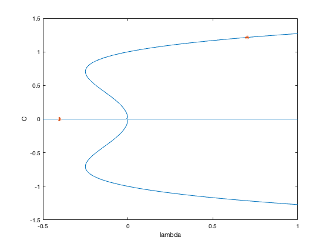
Question 2
The continuation follows the upper branch of steady states until the saddle-node bifurcation is reached. To the left of the saddle-node bifurcation, the only branch of stable steady states is the trivial state 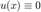, hence the continuation jumps to that branch and sticks with it. In general, one should expect that, when the branch has an instability, the brute-force continuation will jump to a nearby stable branch. This is because, via time simulation, the only attainable steady states are the linearly stable ones: when one initialises a time simulation from an unstable steady state (or nearby) the solution departs from it, by definition of linear instability. As we shall see, however, this must be taken with a pinch of salt: sometimes the dynamics stays nearby an unstable equilbirium for long times before departing, and this can lead one to think that an equilibrium found via direct simulation is stable, when in fact it is unstable. There is no way to asess stability with brute-force simulation of the original PDE.
% Values of lambda and l2 norms lambdaVals = 0.7:-0.02:-0.5; l2NormVals = zeros(size(lambdaVals)); resVals = zeros(size(lambdaVals)); disp('Branch of homogeneous steady states'); fprintf('----------------------------------------\n'); fprintf('%12s %12s %12s\n','lambda','l2 Norm', '||F(U)||'); fprintf('----------------------------------------\n'); for i = 1:length(lambdaVals) % Time Step p = [1; lambdaVals(i); 0; 1; 1]; if i == 1 u0 = 1./cosh(x).^2; else %pause u0 = uFinal; end rhs = @(t,u) AllenCahn(u,p,Dxx); tSpan = [0 50]; [t,UHist] = ode15s(rhs,tSpan,u0); % Plot initial and final state uFinal = UHist(end,:)'; % Compute and display l2 norm of final state l2NormVals(i) = ComputeL2Norm(uFinal,x); resVals(i) = norm(AllenCahn(uFinal,p,Dxx),'inf'); fprintf('%12.4e %12.4e %12.4e \n',lambdaVals(i),l2NormVals(i),resVals(i)); end fprintf('----------------------------------------\n'); figure(bd), hold on; plot(lambdaVals,l2NormVals,'*'); hold off;
Branch of homogeneous steady states
----------------------------------------
lambda l2 Norm ||F(U)||
----------------------------------------
7.0000e-01 1.2144e+00 5.5474e-07
6.8000e-01 1.2101e+00 7.0166e-14
6.6000e-01 1.2058e+00 4.8406e-14
6.4000e-01 1.2014e+00 5.5511e-14
6.2000e-01 1.1970e+00 6.3061e-14
6.0000e-01 1.1925e+00 7.3719e-14
5.8000e-01 1.1879e+00 1.1591e-13
5.6000e-01 1.1832e+00 1.0081e-13
5.4000e-01 1.1785e+00 1.4788e-13
5.2000e-01 1.1737e+00 1.6831e-13
5.0000e-01 1.1688e+00 1.6387e-13
4.8000e-01 1.1638e+00 1.9229e-13
4.6000e-01 1.1587e+00 2.2604e-13
4.4000e-01 1.1535e+00 2.8022e-13
4.2000e-01 1.1483e+00 3.1242e-13
4.0000e-01 1.1429e+00 3.6549e-13
3.8000e-01 1.1374e+00 4.2677e-13
3.6000e-01 1.1318e+00 4.9694e-13
3.4000e-01 1.1261e+00 5.7376e-13
3.2000e-01 1.1203e+00 6.5770e-13
3.0000e-01 1.1143e+00 7.4385e-13
2.8000e-01 1.1082e+00 8.2623e-13
2.6000e-01 1.1019e+00 1.2057e-13
2.4000e-01 1.0954e+00 1.4011e-13
2.2000e-01 1.0888e+00 2.1494e-13
2.0000e-01 1.0820e+00 3.8947e-13
1.8000e-01 1.0751e+00 5.4334e-13
1.6000e-01 1.0679e+00 8.5532e-13
1.4000e-01 1.0604e+00 1.2970e-12
1.2000e-01 1.0527e+00 1.9551e-12
1.0000e-01 1.0448e+00 3.0189e-12
8.0000e-02 1.0366e+00 4.6321e-12
6.0000e-02 1.0280e+00 7.1612e-12
4.0000e-02 1.0191e+00 1.0946e-11
2.0000e-02 1.0098e+00 1.6545e-11
0.0000e+00 1.0000e+00 2.4415e-11
-2.0000e-02 9.8974e-01 3.4395e-11
-4.0000e-02 9.7891e-01 4.3861e-11
-6.0000e-02 9.6741e-01 4.2007e-11
-8.0000e-02 9.5515e-01 6.2066e-12
-1.0000e-01 9.4197e-01 2.0777e-10
-1.2000e-01 9.2766e-01 8.8023e-10
-1.4000e-01 9.1196e-01 1.9365e-09
-1.6000e-01 8.9443e-01 2.3676e-09
-1.8000e-01 8.7440e-01 1.8676e-09
-2.0000e-01 8.5065e-01 1.6147e-08
-2.2000e-01 8.2049e-01 1.5407e-06
-2.4000e-01 7.7458e-01 2.8109e-06
-2.6000e-01 7.4948e-04 1.9486e-04
-2.8000e-01 1.3847e-09 3.8772e-10
-3.0000e-01 4.5184e-16 1.3555e-16
-3.2000e-01 5.2155e-22 1.6690e-22
-3.4000e-01 6.8309e-28 2.3225e-28
-3.6000e-01 6.8661e-34 2.4718e-34
-3.8000e-01 4.1946e-40 1.5939e-40
-4.0000e-01 1.1244e-46 4.4978e-47
-4.2000e-01 1.7744e-54 7.4527e-55
-4.4000e-01 2.6369e-61 1.1602e-61
-4.6000e-01 6.3793e-68 2.9345e-68
-4.8000e-01 1.8070e-74 8.6737e-75
-5.0000e-01 5.2289e-81 2.6145e-81
----------------------------------------
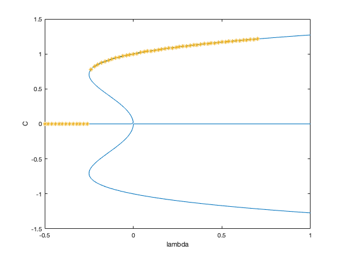 Question 3
A branch of "bump" solutions exixsts. The branch is stable until it undergoes a saddle-node bifurcation for 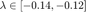. We also observe a jump towards the trivial homogeneous steady state .
% Values of lambda and l2 norms lambdaVals = 0.7:-0.02:-0.5; l2NormVals = zeros(size(lambdaVals)); resVals = zeros(size(lambdaVals)); disp('Branch of patterned steady states'); fprintf('----------------------------------------\n'); fprintf('%12s %12s %12s\n','lambda','l2 Norm', '||F(U)||'); fprintf('----------------------------------------\n'); for i = 1:length(lambdaVals) % Time Step p = [1; lambdaVals(i); 0; 1; 1]; if i == 1 u0 = 0.4*cos(2*pi/10*x); else u0 = uFinal; end rhs = @(t,u) AllenCahn(u,p,Dxx); tSpan = [0 50]; [t,UHist] = ode15s(rhs,tSpan,u0); % Plot initial and final state uFinal = UHist(end,:)'; uNorm = norm(AllenCahn(uFinal,p,Dxx),'inf'); if i == 1 figure(); plot(x,uFinal); xlabel('x'); ylabel('u(x)'); title(['Equlibrium for lambda = ' num2str(lambdaVals(i))... ', ||F(u)|| = ', num2str(uNorm)]); end % Compute and display l2 norm of final state l2NormVals(i) = ComputeL2Norm(uFinal,x); resVals(i) = norm(AllenCahn(uFinal,p,Dxx),'inf'); fprintf('%12.4e %12.4e %12.4e \n',lambdaVals(i),l2NormVals(i),resVals(i)); end fprintf('----------------------------------------\n'); figure(bd), hold on; plot(lambdaVals,l2NormVals,'*'); hold off;
Branch of patterned steady states
----------------------------------------
lambda l2 Norm ||F(U)||
----------------------------------------
7.0000e-01 9.2668e-01 2.4490e-12
6.8000e-01 9.2003e-01 4.1690e-12
6.6000e-01 9.1322e-01 7.0293e-12
6.4000e-01 9.0625e-01 1.2961e-11
6.2000e-01 8.9910e-01 2.6340e-11
6.0000e-01 8.9177e-01 5.8585e-11
5.8000e-01 8.8423e-01 1.4377e-10
5.6000e-01 8.7648e-01 3.9507e-10
5.4000e-01 8.6850e-01 1.2272e-09
5.2000e-01 8.6027e-01 4.3643e-09
5.0000e-01 8.5177e-01 1.8064e-08
4.8000e-01 8.4298e-01 8.8049e-08
4.6000e-01 8.3386e-01 5.2399e-07
4.4000e-01 8.2438e-01 3.8553e-06
4.2000e-01 8.1450e-01 3.5992e-05
4.0000e-01 8.0416e-01 4.2538e-04
3.8000e-01 7.9200e-01 7.8848e-03
3.6000e-01 1.1318e+00 8.8483e-12
3.4000e-01 1.1261e+00 5.7376e-13
3.2000e-01 1.1203e+00 6.5770e-13
3.0000e-01 1.1143e+00 7.4385e-13
2.8000e-01 1.1082e+00 8.2623e-13
2.6000e-01 1.1019e+00 1.2057e-13
2.4000e-01 1.0954e+00 1.4011e-13
2.2000e-01 1.0888e+00 2.1494e-13
2.0000e-01 1.0820e+00 3.8947e-13
1.8000e-01 1.0751e+00 5.4334e-13
1.6000e-01 1.0679e+00 8.5532e-13
1.4000e-01 1.0604e+00 1.2970e-12
1.2000e-01 1.0527e+00 1.9551e-12
1.0000e-01 1.0448e+00 3.0189e-12
8.0000e-02 1.0366e+00 4.6321e-12
6.0000e-02 1.0280e+00 7.1612e-12
4.0000e-02 1.0191e+00 1.0946e-11
2.0000e-02 1.0098e+00 1.6545e-11
0.0000e+00 1.0000e+00 2.4415e-11
-2.0000e-02 9.8974e-01 3.4395e-11
-4.0000e-02 9.7891e-01 4.3861e-11
-6.0000e-02 9.6741e-01 4.2007e-11
-8.0000e-02 9.5515e-01 6.2066e-12
-1.0000e-01 9.4197e-01 2.0777e-10
-1.2000e-01 9.2766e-01 8.8023e-10
-1.4000e-01 9.1196e-01 1.9365e-09
-1.6000e-01 8.9443e-01 2.3676e-09
-1.8000e-01 8.7440e-01 1.8676e-09
-2.0000e-01 8.5065e-01 1.6147e-08
-2.2000e-01 8.2049e-01 1.5407e-06
-2.4000e-01 7.7458e-01 2.8109e-06
-2.6000e-01 7.4948e-04 1.9486e-04
-2.8000e-01 1.3847e-09 3.8772e-10
-3.0000e-01 4.5184e-16 1.3555e-16
-3.2000e-01 5.2155e-22 1.6690e-22
-3.4000e-01 6.8309e-28 2.3225e-28
-3.6000e-01 6.8661e-34 2.4718e-34
-3.8000e-01 4.1946e-40 1.5939e-40
-4.0000e-01 1.1244e-46 4.4978e-47
-4.2000e-01 1.7744e-54 7.4527e-55
-4.4000e-01 2.6369e-61 1.1602e-61
-4.6000e-01 6.3793e-68 2.9345e-68
-4.8000e-01 1.8070e-74 8.6737e-75
-5.0000e-01 5.2289e-81 2.6145e-81
----------------------------------------
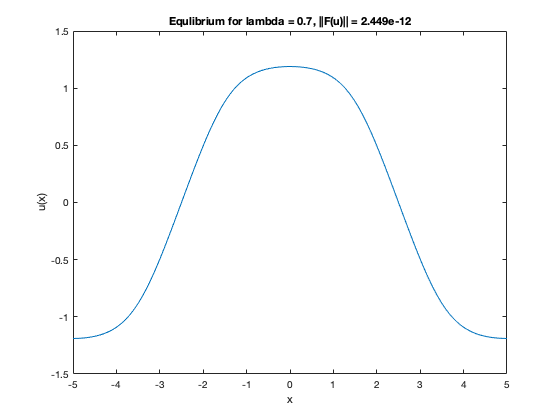 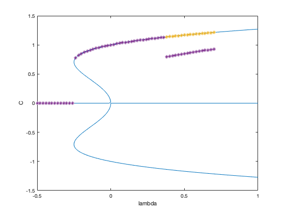 Question 4
% Time step with lambda = 0.1 p = [1; 0.7; 0; 1; 1]; u0 = 0.5*tanh(-x); rhs = @(t,u) AllenCahn(u,p,Dxx); tSpan = [0 10]; [t,UHist] = ode15s(rhs,tSpan,u0); % Plot [X,T] = meshgrid(x,t); figure; surf(X,T,UHist); shading interp; xlabel('x'); ylabel('t'); zlabel('u'); uFinal = UHist(end,:)'; uNorm = norm(AllenCahn(uFinal,p,Dxx),'inf'); figure; plot(x,uFinal); xlabel('x'); ylabel('u(x)'); title(['Equlibrium for lambda = ' num2str(lambdaVals(i)) ... ', ||F(u)|| = ', num2str(uNorm)]);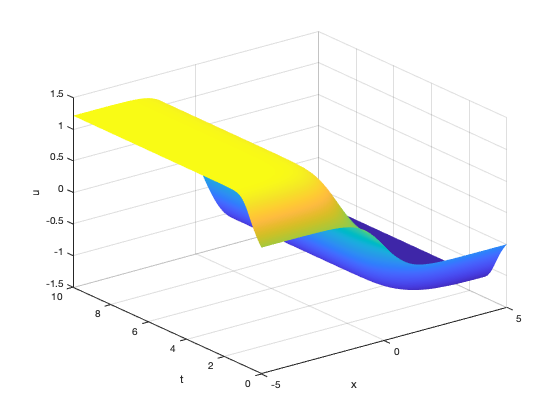 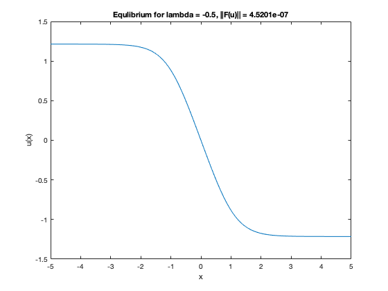
Question 5
The branch becomes unstable at a bifurcation (whose type can not yet be inferred) in the interval 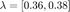. When the instability occurs, the solution jumps to the stable branch of homogeneous steady states. It may seem counterintuitive, at first, that the solution does not jump to the closer branch of patterned bump states (in 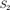 norm). The fact that the branch appears closer than the homogeneous one depends clearly on the norm we selected, and it is therefore a projection effect.
% Values of lambda and l2 norms lambdaVals = 0.7:-0.02:-0.5; l2NormVals = zeros(size(lambdaVals)); resVals = zeros(size(lambdaVals)); disp('Branch of patterned steady states'); fprintf('----------------------------------------\n'); fprintf('%12s %12s %12s\n','lambda','l2 Norm', '||F(U)||'); fprintf('----------------------------------------\n'); for i = 1:length(lambdaVals) % Time Step p = [1; lambdaVals(i); 0; 1; 1]; if i == 1 u0 = 0.5*tanh(-x); else %pause u0 = uFinal; end rhs = @(t,u) AllenCahn(u,p,Dxx); tSpan = [0 50]; [t,UHist] = ode15s(rhs,tSpan,u0); % Plot initial and final state uFinal = UHist(end,:)'; % Compute and display l2 norm of final state l2NormVals(i) = ComputeL2Norm(uFinal,x); resVals(i) = norm(AllenCahn(uFinal,p,Dxx),'inf'); fprintf('%12.4e %12.4e %12.4e \n',lambdaVals(i),l2NormVals(i),resVals(i)); end fprintf('----------------------------------------\n'); figure(bd), hold on; plot(lambdaVals,l2NormVals,'*'); hold off;
Branch of patterned steady states
----------------------------------------
lambda l2 Norm ||F(U)||
----------------------------------------
7.0000e-01 1.0805e+00 6.5725e-14
6.8000e-01 1.0753e+00 8.0558e-13
6.6000e-01 1.0700e+00 9.2881e-13
6.4000e-01 1.0646e+00 1.0573e-12
6.2000e-01 1.0591e+00 1.2110e-12
6.0000e-01 1.0535e+00 1.4201e-12
5.8000e-01 1.0478e+00 1.6565e-12
5.6000e-01 1.0420e+00 1.9027e-12
5.4000e-01 1.0360e+00 2.7084e-12
5.2000e-01 1.0299e+00 2.8848e-12
5.0000e-01 1.0237e+00 3.1485e-12
4.8000e-01 1.0174e+00 3.5082e-12
4.6000e-01 1.0109e+00 3.9342e-12
4.4000e-01 1.0043e+00 4.4569e-12
4.2000e-01 9.9744e-01 5.0159e-12
4.0000e-01 9.9045e-01 5.5256e-12
3.8000e-01 9.8326e-01 6.0337e-12
3.6000e-01 9.7588e-01 6.2514e-12
3.4000e-01 9.6828e-01 5.9056e-12
3.2000e-01 9.6045e-01 4.3894e-12
3.0000e-01 9.5238e-01 2.2704e-12
2.8000e-01 9.4403e-01 1.0589e-11
2.6000e-01 9.3540e-01 2.7438e-11
2.4000e-01 9.2645e-01 1.8208e-11
2.2000e-01 9.1716e-01 2.8300e-11
2.0000e-01 9.0750e-01 4.4145e-11
1.8000e-01 8.9741e-01 6.9601e-11
1.6000e-01 8.8687e-01 1.1079e-10
1.4000e-01 8.7582e-01 1.7474e-10
1.2000e-01 8.6418e-01 2.6662e-10
1.0000e-01 8.5190e-01 3.7702e-10
8.0000e-02 8.3887e-01 1.2531e-09
6.0000e-02 8.2497e-01 1.6332e-09
4.0000e-02 8.1005e-01 3.0722e-09
2.0000e-02 7.9392e-01 6.1434e-09
0.0000e+00 7.7632e-01 7.3129e-08
-2.0000e-02 7.5685e-01 9.7075e-08
-4.0000e-02 7.3497e-01 2.3818e-07
-6.0000e-02 7.0977e-01 2.1128e-07
-8.0000e-02 6.7953e-01 4.1587e-06
-1.0000e-01 6.4011e-01 9.7669e-06
-1.2000e-01 5.6808e-01 1.0488e-04
-1.4000e-01 1.5546e-04 5.2434e-05
-1.6000e-01 1.2611e-09 4.6148e-10
-1.8000e-01 6.9971e-15 2.7995e-15
-2.0000e-01 5.8655e-20 1.3207e-20
-2.2000e-01 6.2905e-24 1.3857e-24
-2.4000e-01 2.8394e-28 6.8148e-29
-2.6000e-01 4.8527e-33 1.2617e-33
-2.8000e-01 2.4469e-38 6.8513e-39
-3.0000e-01 7.9844e-45 2.3953e-45
-3.2000e-01 9.2162e-51 2.9492e-51
-3.4000e-01 1.2071e-56 4.1041e-57
-3.6000e-01 1.2133e-62 4.3679e-63
-3.8000e-01 7.4121e-69 2.8166e-69
-4.0000e-01 1.9870e-75 7.9479e-76
-4.2000e-01 3.1356e-83 1.3169e-83
-4.4000e-01 4.6596e-90 2.0502e-90
-4.6000e-01 1.1273e-96 5.1855e-97
-4.8000e-01 3.1931e-103 1.5327e-103
-5.0000e-01 9.2399e-110 4.6200e-110
----------------------------------------
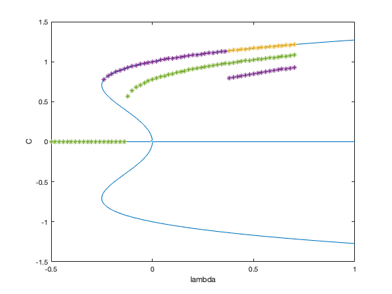 Question 6
Spatial grid
nx = 100; [x,~,Dxx] = NeumannDiffMat([-5,5],nx); % For all flags flagList = {'flat','bump','sigmoid'}; for k = 1:length(flagList) % Get flag and setup initial condition u0Flag = flagList{k} switch u0Flag case 'flat' u0 = zeros(size(x))+0.01*rand(size(x)); case 'bump' u0 = 0.4*cos(pi/5*x); case 'sigmoid' u0 = 0.5*tanh(x); otherwise error('u0Flag not implemented'); end % Setup problem and time step p = [1; 0.7; 0; 1; 1]; rhs = @(t,u) AllenCahn(u,p,Dxx); tSpan = [0 50]; [t,UHist] = ode15s(rhs,tSpan,u0); % Plot surface [X,T] = meshgrid(x,t); figure; subplot(1,2,1); surf(X,T,UHist); shading interp; xlabel('x'); ylabel('t'); zlabel('u'); % Get fina state and estimate its time variation uFinal = UHist(end,:)'; uNorm = norm(AllenCahn(uFinal,p,Dxx),'inf'); % Plot final state subplot(1,2,2); plot(x,u0,x,uFinal); xlabel('x'); ylabel('u(x)'); legend({'u(0)','u(T)'}); title(['Equlibrium for lambda = ' num2str(p(2)) ... ', ||F(u)|| = ', num2str(uNorm)]); % Save a file (flag dependent) fileName = ['solution_' u0Flag '.mat']; u = uFinal; save(fileName,'u','p'); end
u0Flag =
'flat'
u0Flag =
'bump'
u0Flag =
'sigmoid'
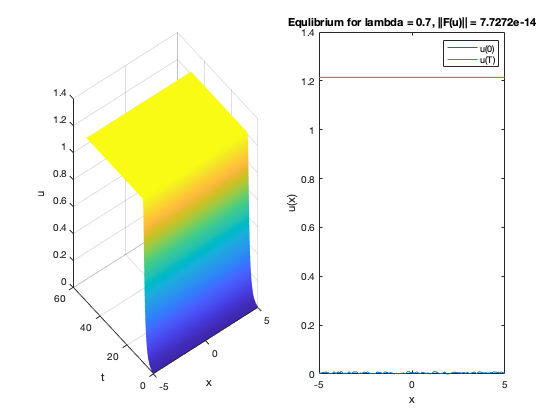 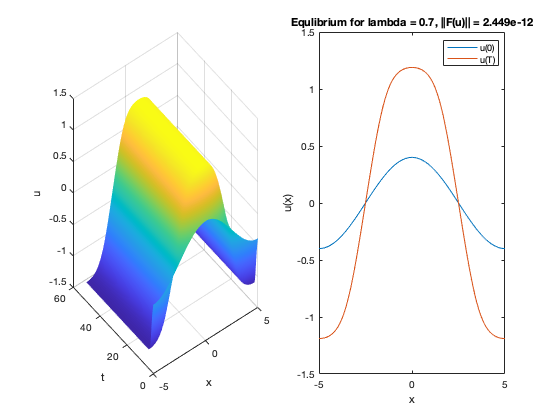 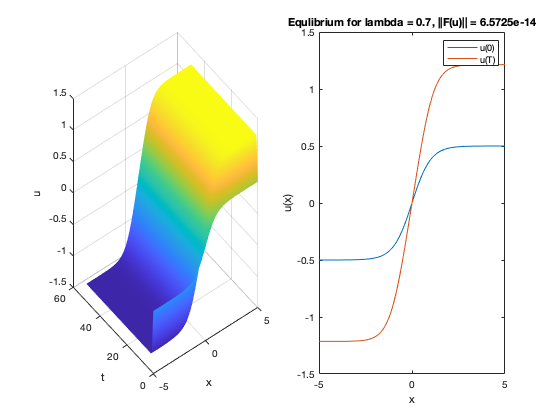 Question 7
% Setup problem sol = load('solution_sigmoid.mat'); u0 = sol.u; p = sol.p; prob = @(u) AllenCahn(u,p,Dxx); % Setup and solve BVP opts = optimset('Display','iter',... 'TolFun',1e-10,... 'MaxIter',50,... 'Jacobian','on'); u = fsolve(prob,u0,opts); % Plot solution lims = [-5 5 -2 2]; eqFig = PlotSteadyState(x,u,[],lims,'',[]);
Norm of First-order Trust-region
Iteration Func-count f(x) step optimality radius
0 1 6.18526e-26 3.07e-11 1
Equation solved at initial point.
fsolve completed because the vector of function values at the initial point
is near zero as measured by the value of the function tolerance, and
the problem appears regular as measured by the gradient.
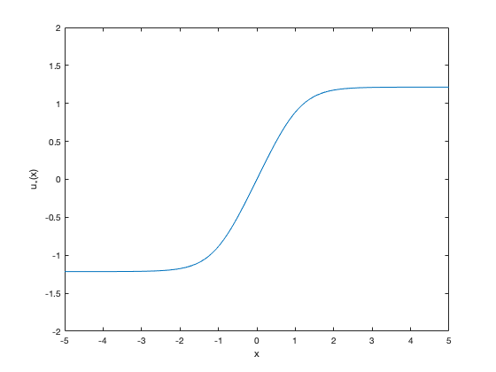 Question 8
% Perturb parameter p(2) = p(2) - 0.3; prob = @(u) AllenCahn(u,p,Dxx); % Setup and solve BVP opts = optimset('Display','iter',... 'TolFun',1e-10,... 'MaxIter',50,... 'Jacobian','on'); u = fsolve(prob,u0,opts); % Plot solution eqFig = PlotSteadyState(x,u,eqFig,[-5 5 -2 2],'',false); hold off;
Norm of First-order Trust-region
Iteration Func-count f(x) step optimality radius
0 1 10.5343 37.9 1
1 2 0.314283 0.772922 5.01 1
2 3 0.00138912 0.210936 0.148 1.93
3 4 6.21545e-08 0.0168966 0.000376 1.93
4 5 1.35383e-16 0.000113176 1.92e-08 1.93
5 6 2.94831e-26 5.30856e-09 1.12e-11 1.93
Equation solved.
fsolve completed because the vector of function values is near zero
as measured by the value of the function tolerance, and
the problem appears regular as measured by the gradient.
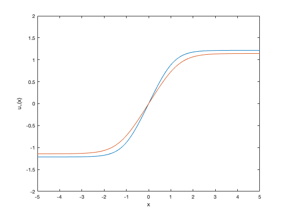 Question 9
% Grid and differentiation matrix [x,~,Dxx] = NeumannDiffMat([-5,5],nx); % Initial guess and parameters sol = load('solution_sigmoid.mat'); u0 = sol.u; p0 = sol.p; % Problem setup prob = @(u,p) AllenCahn(u,p,Dxx); % Continuation parameters icp = 2; % Continuation parameter index. icp = 2 means continuation in p(2) ds = -0.1; % Parameter stepsize (negative means initially decreasing parameter) nSteps = 200; % Number of continuation steps to be taken opts = optimset('Display','off',... % Options to pass to fsolve 'TolFun',1e-10,... 'MaxIter',50,... 'Jacobian','on'); % Launch continuation and plot bifurcation diagaram [bd1,sol1] = SecantContinuation(prob,u0,p0,icp,ds,nSteps,opts); bdFig = figure; plot(bd1(:,2), bd1(:,3), '.-','DisplayName','sigmoidal'); ylim([-1 14]); xlabel('lambda'); ylabel('2-Norm'); legend show
**** STARTING CONTINUATION ******
STEP PAR 2-NORM
0 7.0000e-01 1.0819e+01
1 6.9000e-01 1.0793e+01
2 6.5746e-01 1.0707e+01
3 6.2579e-01 1.0621e+01
4 5.9498e-01 1.0535e+01
5 5.6503e-01 1.0449e+01
6 5.3592e-01 1.0363e+01
7 5.0764e-01 1.0277e+01
8 4.8020e-01 1.0190e+01
9 4.5357e-01 1.0104e+01
10 4.2774e-01 1.0017e+01
11 4.0271e-01 9.9304e+00
12 3.7846e-01 9.8436e+00
13 3.5498e-01 9.7568e+00
14 3.3226e-01 9.6699e+00
15 3.1028e-01 9.5830e+00
16 2.8904e-01 9.4960e+00
17 2.6851e-01 9.4090e+00
18 2.4868e-01 9.3220e+00
19 2.2955e-01 9.2349e+00
20 2.1109e-01 9.1478e+00
21 1.9330e-01 9.0607e+00
22 1.7615e-01 8.9736e+00
23 1.5963e-01 8.8864e+00
24 1.4373e-01 8.7992e+00
25 1.2843e-01 8.7120e+00
26 1.1372e-01 8.6247e+00
27 9.9587e-02 8.5374e+00
28 8.6010e-02 8.4501e+00
29 7.2978e-02 8.3627e+00
30 6.0475e-02 8.2752e+00
31 4.8487e-02 8.1876e+00
32 3.7001e-02 8.1000e+00
33 2.6002e-02 8.0123e+00
34 1.5478e-02 7.9244e+00
35 5.4141e-03 7.8365e+00
36 -4.2010e-03 7.7484e+00
37 -1.3380e-02 7.6601e+00
38 -2.2135e-02 7.5716e+00
39 -3.0477e-02 7.4830e+00
40 -3.8417e-02 7.3941e+00
41 -4.5965e-02 7.3050e+00
42 -5.3130e-02 7.2156e+00
43 -5.9921e-02 7.1259e+00
44 -6.6345e-02 7.0360e+00
45 -7.2409e-02 6.9456e+00
46 -7.8119e-02 6.8550e+00
47 -8.3480e-02 6.7639e+00
48 -8.8496e-02 6.6725e+00
49 -9.3168e-02 6.5806e+00
50 -9.7498e-02 6.4883e+00
51 -1.0149e-01 6.3955e+00
52 -1.0513e-01 6.3022e+00
53 -1.0843e-01 6.2085e+00
54 -1.1138e-01 6.1143e+00
55 -1.1398e-01 6.0195e+00
56 -1.1622e-01 5.9243e+00
57 -1.1809e-01 5.8285e+00
58 -1.1959e-01 5.7323e+00
59 -1.2071e-01 5.6355e+00
60 -1.2143e-01 5.5384e+00
61 -1.2176e-01 5.4407e+00
62 -1.2169e-01 5.3427e+00
63 -1.2120e-01 5.2443e+00
64 -1.2030e-01 5.1456e+00
65 -1.1897e-01 5.0466e+00
66 -1.1723e-01 4.9473e+00
67 -1.1508e-01 4.8478e+00
68 -1.1250e-01 4.7482e+00
69 -1.0953e-01 4.6484e+00
70 -1.0616e-01 4.5486e+00
71 -1.0240e-01 4.4487e+00
72 -9.8286e-02 4.3488e+00
73 -9.3823e-02 4.2489e+00
74 -8.9038e-02 4.1491e+00
75 -8.3953e-02 4.0492e+00
76 -7.8594e-02 3.9494e+00
77 -7.2989e-02 3.8497e+00
78 -6.7165e-02 3.7500e+00
79 -6.1151e-02 3.6504e+00
80 -5.4977e-02 3.5508e+00
81 -4.8671e-02 3.4513e+00
82 -4.2262e-02 3.3517e+00
83 -3.5779e-02 3.2522e+00
84 -2.9248e-02 3.1527e+00
85 -2.2697e-02 3.0532e+00
86 -1.6151e-02 2.9537e+00
87 -9.6349e-03 2.8542e+00
88 -3.1709e-03 2.7547e+00
89 3.2186e-03 2.6551e+00
90 9.5130e-03 2.5556e+00
91 1.5693e-02 2.4560e+00
92 2.1741e-02 2.3563e+00
93 2.7640e-02 2.2567e+00
94 3.3374e-02 2.1570e+00
95 3.8930e-02 2.0572e+00
96 4.4293e-02 1.9575e+00
97 4.9453e-02 1.8577e+00
98 5.4397e-02 1.7579e+00
99 5.9117e-02 1.6581e+00
100 6.3602e-02 1.5582e+00
101 6.7844e-02 1.4583e+00
102 7.1835e-02 1.3584e+00
103 7.5570e-02 1.2585e+00
104 7.9041e-02 1.1586e+00
105 8.2243e-02 1.0587e+00
106 8.5171e-02 9.5872e-01
107 8.7821e-02 8.5876e-01
108 9.0189e-02 7.5879e-01
109 9.2271e-02 6.5882e-01
110 9.4065e-02 5.5883e-01
111 9.5568e-02 4.5884e-01
112 9.6778e-02 3.5885e-01
113 9.7693e-02 2.5885e-01
114 9.8313e-02 1.5886e-01
115 9.8636e-02 5.8855e-02
116 9.8663e-02 4.1145e-02
117 9.8392e-02 1.4115e-01
118 9.7825e-02 2.4114e-01
119 9.6962e-02 3.4114e-01
120 9.5804e-02 4.4113e-01
121 9.4352e-02 5.4112e-01
122 9.2610e-02 6.4111e-01
123 9.0579e-02 7.4109e-01
124 8.8261e-02 8.4106e-01
125 8.5661e-02 9.4102e-01
126 8.2782e-02 1.0410e+00
127 7.9628e-02 1.1409e+00
128 7.6204e-02 1.2408e+00
129 7.2516e-02 1.3408e+00
130 6.8569e-02 1.4406e+00
131 6.4371e-02 1.5405e+00
132 5.9928e-02 1.6404e+00
133 5.5250e-02 1.7402e+00
134 5.0345e-02 1.8400e+00
135 4.5222e-02 1.9398e+00
136 3.9894e-02 2.0396e+00
137 3.4371e-02 2.1393e+00
138 2.8668e-02 2.2390e+00
139 2.2797e-02 2.3387e+00
140 1.6774e-02 2.4383e+00
141 1.0616e-02 2.5379e+00
142 4.3409e-03 2.6375e+00
143 -2.0332e-03 2.7371e+00
144 -8.4856e-03 2.8366e+00
145 -1.4994e-02 2.9361e+00
146 -2.1537e-02 3.0356e+00
147 -2.8089e-02 3.1351e+00
148 -3.4625e-02 3.2346e+00
149 -4.1119e-02 3.3341e+00
150 -4.7543e-02 3.4336e+00
151 -5.3869e-02 3.5332e+00
152 -6.0069e-02 3.6328e+00
153 -6.6113e-02 3.7324e+00
154 -7.1972e-02 3.8321e+00
155 -7.7618e-02 3.9318e+00
156 -8.3022e-02 4.0315e+00
157 -8.8158e-02 4.1314e+00
158 -9.2998e-02 4.2312e+00
159 -9.7519e-02 4.3311e+00
160 -1.0170e-01 4.4310e+00
161 -1.0552e-01 4.5309e+00
162 -1.0896e-01 4.6307e+00
163 -1.1201e-01 4.7305e+00
164 -1.1465e-01 4.8302e+00
165 -1.1688e-01 4.9297e+00
166 -1.1870e-01 5.0290e+00
167 -1.2009e-01 5.1280e+00
168 -1.2107e-01 5.2268e+00
169 -1.2163e-01 5.3253e+00
170 -1.2178e-01 5.4234e+00
171 -1.2152e-01 5.5211e+00
172 -1.2086e-01 5.6183e+00
173 -1.1982e-01 5.7151e+00
174 -1.1838e-01 5.8115e+00
175 -1.1658e-01 5.9073e+00
176 -1.1440e-01 6.0027e+00
177 -1.1187e-01 6.0975e+00
178 -1.0898e-01 6.1918e+00
179 -1.0574e-01 6.2857e+00
180 -1.0216e-01 6.3790e+00
181 -9.8230e-02 6.4719e+00
182 -9.3960e-02 6.5643e+00
183 -8.9349e-02 6.6562e+00
184 -8.4394e-02 6.7477e+00
185 -7.9095e-02 6.8389e+00
186 -7.3447e-02 6.9296e+00
187 -6.7446e-02 7.0200e+00
188 -6.1086e-02 7.1100e+00
189 -5.4361e-02 7.1997e+00
190 -4.7263e-02 7.2892e+00
191 -3.9783e-02 7.3783e+00
192 -3.1913e-02 7.4672e+00
193 -2.3643e-02 7.5559e+00
194 -1.4962e-02 7.6444e+00
195 -5.8590e-03 7.7327e+00
196 3.6781e-03 7.8209e+00
197 1.3661e-02 7.9089e+00
198 2.4103e-02 7.9967e+00
199 3.5017e-02 8.0845e+00
200 4.6416e-02 8.1721e+00
**** CONTINUATION ENDED ******
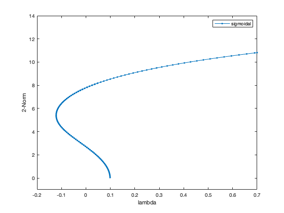 Question 10
% Load initial guess and parameters sol = load('solution_bump.mat'); u0 = sol.u; p0 = sol.p; prob = @(u,p) AllenCahn(u,p,Dxx); % Continuation icp = 2; ds = -0.1; nSteps = 100; opts = optimset('Display','off', 'TolFun',1e-10,'MaxIter',50,'Jacobian','on'); [bd4,sol4] = SecantContinuation(prob,u0,p0,icp,ds,nSteps,opts); figure(bdFig), hold on; plot(bd4(:,2), bd4(:,3), '.-','DisplayName','bump'); lgd = legend('show'); lgd.Location = 'northwest';
**** STARTING CONTINUATION ******
STEP PAR 2-NORM
0 7.0000e-01 9.2967e+00
1 6.9000e-01 9.2638e+00
2 6.6304e-01 9.1729e+00
3 6.3682e-01 9.0817e+00
4 6.1135e-01 8.9902e+00
5 5.8662e-01 8.8983e+00
6 5.6262e-01 8.8061e+00
7 5.3936e-01 8.7136e+00
8 5.1682e-01 8.6207e+00
9 4.9501e-01 8.5276e+00
10 4.7393e-01 8.4341e+00
11 4.5357e-01 8.3402e+00
12 4.3393e-01 8.2461e+00
13 4.1501e-01 8.1516e+00
14 3.9680e-01 8.0568e+00
15 3.7932e-01 7.9617e+00
16 3.6255e-01 7.8663e+00
17 3.4650e-01 7.7706e+00
18 3.3116e-01 7.6746e+00
19 3.1654e-01 7.5783e+00
20 3.0263e-01 7.4817e+00
21 2.8945e-01 7.3848e+00
22 2.7697e-01 7.2877e+00
23 2.6521e-01 7.1903e+00
24 2.5417e-01 7.0927e+00
25 2.4383e-01 6.9948e+00
26 2.3421e-01 6.8967e+00
27 2.2530e-01 6.7984e+00
28 2.1709e-01 6.6998e+00
29 2.0958e-01 6.6011e+00
30 2.0276e-01 6.5023e+00
31 1.9663e-01 6.4032e+00
32 1.9118e-01 6.3041e+00
33 1.8641e-01 6.2048e+00
34 1.8229e-01 6.1053e+00
35 1.7883e-01 6.0058e+00
36 1.7600e-01 5.9062e+00
37 1.7380e-01 5.8065e+00
38 1.7220e-01 5.7068e+00
39 1.7119e-01 5.6069e+00
40 1.7076e-01 5.5071e+00
41 1.7088e-01 5.4072e+00
42 1.7154e-01 5.3073e+00
43 1.7271e-01 5.2074e+00
44 1.7437e-01 5.1074e+00
45 1.7650e-01 5.0075e+00
46 1.7907e-01 4.9075e+00
47 1.8206e-01 4.8076e+00
48 1.8544e-01 4.7076e+00
49 1.8920e-01 4.6077e+00
50 1.9330e-01 4.5078e+00
51 1.9772e-01 4.4079e+00
52 2.0243e-01 4.3080e+00
53 2.0742e-01 4.2081e+00
54 2.1264e-01 4.1083e+00
55 2.1808e-01 4.0084e+00
56 2.2372e-01 3.9086e+00
57 2.2953e-01 3.8088e+00
58 2.3547e-01 3.7090e+00
59 2.4155e-01 3.6091e+00
60 2.4771e-01 3.5094e+00
61 2.5396e-01 3.4096e+00
62 2.6026e-01 3.3098e+00
63 2.6659e-01 3.2100e+00
64 2.7293e-01 3.1102e+00
65 2.7926e-01 3.0104e+00
66 2.8557e-01 2.9106e+00
67 2.9183e-01 2.8108e+00
68 2.9802e-01 2.7110e+00
69 3.0414e-01 2.6112e+00
70 3.1016e-01 2.5114e+00
71 3.1606e-01 2.4116e+00
72 3.2184e-01 2.3118e+00
73 3.2747e-01 2.2120e+00
74 3.3294e-01 2.1121e+00
75 3.3825e-01 2.0123e+00
76 3.4338e-01 1.9124e+00
77 3.4831e-01 1.8125e+00
78 3.5304e-01 1.7126e+00
79 3.5755e-01 1.6127e+00
80 3.6184e-01 1.5128e+00
81 3.6590e-01 1.4129e+00
82 3.6972e-01 1.3130e+00
83 3.7328e-01 1.2131e+00
84 3.7659e-01 1.1131e+00
85 3.7964e-01 1.0132e+00
86 3.8242e-01 9.1320e-01
87 3.8493e-01 8.1323e-01
88 3.8715e-01 7.1326e-01
89 3.8910e-01 6.1327e-01
90 3.9075e-01 5.1329e-01
91 3.9212e-01 4.1330e-01
92 3.9320e-01 3.1330e-01
93 3.9398e-01 2.1330e-01
94 3.9446e-01 1.1330e-01
95 3.9465e-01 1.3305e-02
96 3.9454e-01 8.6696e-02
97 3.9413e-01 1.8670e-01
98 3.9343e-01 2.8669e-01
99 3.9244e-01 3.8669e-01
100 3.9115e-01 4.8668e-01
**** CONTINUATION ENDED ******
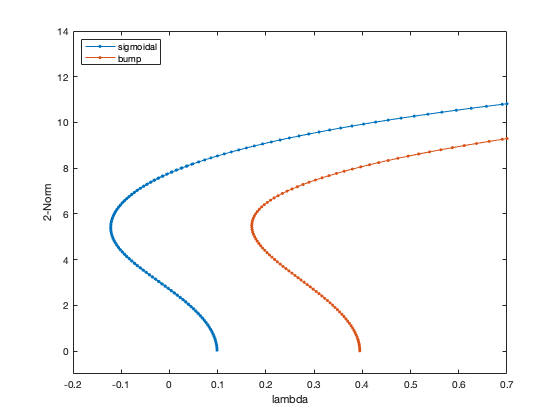 Question 11
The solution presented below uses way too many resources. In principle, we can continue homogeneous steady states by continuing in 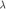 solutions to the scalar problem 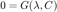, where 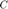 is a real number. This would require defining a new problem. Here, mostly because I am being lazy and 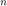 is small, I find the branch by continuing the -dimensional discretised boundary value problem 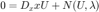.
% Continuation of homogeneous equilibrium C ~= 0 sol = load('solution_flat.mat'); u0 = sol.u; p0 = sol.p; prob = @(u,p) AllenCahn(u,p,Dxx); % Continuation icp = 2; ds = -0.1; nSteps = 200; opts = optimset('Display','off', 'TolFun',1e-10, 'MaxIter',50,'Jacobian','on'); [bd2,sol2] = SecantContinuation(prob,u0,p0,icp,ds,nSteps,opts); figure(bdFig), hold on; plot(bd2(:,2), bd2(:,3), '.-','DisplayName','u_* = C, C > 0 '); legend show % Continuation of homogeneous equilibrium C = 0 u0 = zeros(size(x)); p0 = sol.p; prob = @(u,p) AllenCahn(u,p,Dxx); % Continuation icp = 2; ds = -0.05; nSteps = 30; opts = optimset('Display','off', 'TolFun',1e-10, 'MaxIter',50, 'Jacobian','on'); [bd3,sol3] = SecantContinuation(prob,u0,p0,icp,ds,nSteps,opts); figure(bdFig), hold on; plot(bd3(:,2), bd3(:,3), '.-','DisplayName','u_*=0'); legend show
**** STARTING CONTINUATION ******
STEP PAR 2-NORM
0 7.0000e-01 1.2144e+01
1 6.9000e-01 1.2122e+01
2 6.4798e-01 1.2032e+01
3 6.0701e-01 1.1940e+01
4 5.6710e-01 1.1849e+01
5 5.2824e-01 1.1757e+01
6 4.9045e-01 1.1664e+01
7 4.5372e-01 1.1571e+01
8 4.1806e-01 1.1478e+01
9 3.8345e-01 1.1384e+01
10 3.4991e-01 1.1290e+01
11 3.1742e-01 1.1195e+01
12 2.8598e-01 1.1100e+01
13 2.5558e-01 1.1005e+01
14 2.2623e-01 1.0909e+01
15 1.9791e-01 1.0813e+01
16 1.7061e-01 1.0717e+01
17 1.4433e-01 1.0621e+01
18 1.1905e-01 1.0524e+01
19 9.4773e-02 1.0427e+01
20 7.1475e-02 1.0330e+01
21 4.9148e-02 1.0232e+01
22 2.7779e-02 1.0134e+01
23 7.3541e-03 1.0036e+01
24 -1.2141e-02 9.9384e+00
25 -3.0720e-02 9.8401e+00
26 -4.8400e-02 9.7417e+00
27 -6.5195e-02 9.6431e+00
28 -8.1123e-02 9.5443e+00
29 -9.6201e-02 9.4455e+00
30 -1.1044e-01 9.3465e+00
31 -1.2387e-01 9.2474e+00
32 -1.3650e-01 9.1482e+00
33 -1.4835e-01 9.0489e+00
34 -1.5944e-01 8.9495e+00
35 -1.6978e-01 8.8501e+00
36 -1.7940e-01 8.7505e+00
37 -1.8831e-01 8.6509e+00
38 -1.9653e-01 8.5512e+00
39 -2.0408e-01 8.4515e+00
40 -2.1099e-01 8.3518e+00
41 -2.1726e-01 8.2520e+00
42 -2.2292e-01 8.1521e+00
43 -2.2798e-01 8.0522e+00
44 -2.3247e-01 7.9523e+00
45 -2.3640e-01 7.8524e+00
46 -2.3980e-01 7.7525e+00
47 -2.4267e-01 7.6525e+00
48 -2.4504e-01 7.5525e+00
49 -2.4693e-01 7.4526e+00
50 -2.4835e-01 7.3526e+00
51 -2.4932e-01 7.2526e+00
52 -2.4987e-01 7.1526e+00
53 -2.4999e-01 7.0526e+00
54 -2.4972e-01 6.9526e+00
55 -2.4907e-01 6.8526e+00
56 -2.4806e-01 6.7526e+00
57 -2.4670e-01 6.6526e+00
58 -2.4501e-01 6.5526e+00
59 -2.4300e-01 6.4526e+00
60 -2.4070e-01 6.3526e+00
61 -2.3811e-01 6.2527e+00
62 -2.3525e-01 6.1527e+00
63 -2.3214e-01 6.0528e+00
64 -2.2879e-01 5.9528e+00
65 -2.2521e-01 5.8529e+00
66 -2.2143e-01 5.7530e+00
67 -2.1744e-01 5.6530e+00
68 -2.1328e-01 5.5531e+00
69 -2.0894e-01 5.4532e+00
70 -2.0445e-01 5.3533e+00
71 -1.9982e-01 5.2534e+00
72 -1.9505e-01 5.1535e+00
73 -1.9017e-01 5.0537e+00
74 -1.8518e-01 4.9538e+00
75 -1.8010e-01 4.8539e+00
76 -1.7493e-01 4.7540e+00
77 -1.6969e-01 4.6542e+00
78 -1.6440e-01 4.5543e+00
79 -1.5905e-01 4.4545e+00
80 -1.5367e-01 4.3546e+00
81 -1.4826e-01 4.2548e+00
82 -1.4283e-01 4.1549e+00
83 -1.3740e-01 4.0551e+00
84 -1.3196e-01 3.9552e+00
85 -1.2654e-01 3.8553e+00
86 -1.2115e-01 3.7555e+00
87 -1.1578e-01 3.6556e+00
88 -1.1045e-01 3.5558e+00
89 -1.0517e-01 3.4559e+00
90 -9.9945e-02 3.3561e+00
91 -9.4786e-02 3.2562e+00
92 -8.9699e-02 3.1563e+00
93 -8.4691e-02 3.0564e+00
94 -7.9772e-02 2.9566e+00
95 -7.4947e-02 2.8567e+00
96 -7.0223e-02 2.7568e+00
97 -6.5608e-02 2.6569e+00
98 -6.1108e-02 2.5570e+00
99 -5.6728e-02 2.4571e+00
100 -5.2476e-02 2.3572e+00
101 -4.8357e-02 2.2573e+00
102 -4.4375e-02 2.1574e+00
103 -4.0538e-02 2.0574e+00
104 -3.6849e-02 1.9575e+00
105 -3.3314e-02 1.8576e+00
106 -2.9938e-02 1.7576e+00
107 -2.6723e-02 1.6577e+00
108 -2.3676e-02 1.5577e+00
109 -2.0799e-02 1.4577e+00
110 -1.8096e-02 1.3578e+00
111 -1.5571e-02 1.2578e+00
112 -1.3226e-02 1.1578e+00
113 -1.1066e-02 1.0579e+00
114 -9.0913e-03 9.5789e-01
115 -7.3058e-03 8.5790e-01
116 -5.7114e-03 7.5792e-01
117 -4.3099e-03 6.5793e-01
118 -3.1032e-03 5.5793e-01
119 -2.0927e-03 4.5794e-01
120 -1.2796e-03 3.5794e-01
121 -6.6490e-04 2.5794e-01
122 -2.4940e-04 1.5794e-01
123 -3.3573e-05 5.7943e-02
124 -1.7688e-05 4.2057e-02
125 -2.0176e-04 1.4206e-01
126 -5.8557e-04 2.4206e-01
127 -1.1686e-03 3.4205e-01
128 -1.9503e-03 4.4205e-01
129 -2.9295e-03 5.4205e-01
130 -4.1052e-03 6.4204e-01
131 -5.4758e-03 7.4203e-01
132 -7.0397e-03 8.4202e-01
133 -8.7950e-03 9.4200e-01
134 -1.0739e-02 1.0420e+00
135 -1.2871e-02 1.1420e+00
136 -1.5186e-02 1.2419e+00
137 -1.7683e-02 1.3419e+00
138 -2.0358e-02 1.4419e+00
139 -2.3207e-02 1.5418e+00
140 -2.6228e-02 1.6418e+00
141 -2.9416e-02 1.7417e+00
142 -3.2767e-02 1.8417e+00
143 -3.6278e-02 1.9416e+00
144 -3.9942e-02 2.0415e+00
145 -4.3756e-02 2.1415e+00
146 -4.7715e-02 2.2414e+00
147 -5.1813e-02 2.3413e+00
148 -5.6044e-02 2.4412e+00
149 -6.0404e-02 2.5411e+00
150 -6.4885e-02 2.6410e+00
151 -6.9483e-02 2.7409e+00
152 -7.4189e-02 2.8408e+00
153 -7.8999e-02 2.9407e+00
154 -8.3904e-02 3.0406e+00
155 -8.8898e-02 3.1405e+00
156 -9.3973e-02 3.2403e+00
157 -9.9121e-02 3.3402e+00
158 -1.0434e-01 3.4401e+00
159 -1.0961e-01 3.5399e+00
160 -1.1493e-01 3.6398e+00
161 -1.2029e-01 3.7396e+00
162 -1.2568e-01 3.8395e+00
163 -1.3110e-01 3.9393e+00
164 -1.3653e-01 4.0392e+00
165 -1.4197e-01 4.1390e+00
166 -1.4740e-01 4.2389e+00
167 -1.5281e-01 4.3387e+00
168 -1.5820e-01 4.4386e+00
169 -1.6355e-01 4.5385e+00
170 -1.6885e-01 4.6383e+00
171 -1.7410e-01 4.7382e+00
172 -1.7928e-01 4.8380e+00
173 -1.8438e-01 4.9379e+00
174 -1.8938e-01 5.0378e+00
175 -1.9428e-01 5.1377e+00
176 -1.9907e-01 5.2376e+00
177 -2.0372e-01 5.3374e+00
178 -2.0824e-01 5.4373e+00
179 -2.1260e-01 5.5373e+00
180 -2.1679e-01 5.6372e+00
181 -2.2081e-01 5.7371e+00
182 -2.2463e-01 5.8370e+00
183 -2.2824e-01 5.9369e+00
184 -2.3162e-01 6.0369e+00
185 -2.3477e-01 6.1368e+00
186 -2.3767e-01 6.2368e+00
187 -2.4031e-01 6.3368e+00
188 -2.4266e-01 6.4367e+00
189 -2.4471e-01 6.5367e+00
190 -2.4645e-01 6.6367e+00
191 -2.4787e-01 6.7367e+00
192 -2.4894e-01 6.8367e+00
193 -2.4965e-01 6.9367e+00
194 -2.4998e-01 7.0367e+00
195 -2.4991e-01 7.1367e+00
196 -2.4944e-01 7.2367e+00
197 -2.4854e-01 7.3367e+00
198 -2.4719e-01 7.4367e+00
199 -2.4537e-01 7.5367e+00
200 -2.4308e-01 7.6366e+00
**** CONTINUATION ENDED ******
**** STARTING CONTINUATION ******
STEP PAR 2-NORM
0 7.0000e-01 0.0000e+00
1 6.9500e-01 0.0000e+00
2 6.4500e-01 0.0000e+00
3 5.9500e-01 0.0000e+00
4 5.4500e-01 0.0000e+00
5 4.9500e-01 0.0000e+00
6 4.4500e-01 0.0000e+00
7 3.9500e-01 0.0000e+00
8 3.4500e-01 0.0000e+00
9 2.9500e-01 0.0000e+00
10 2.4500e-01 0.0000e+00
11 1.9500e-01 0.0000e+00
12 1.4500e-01 0.0000e+00
13 9.5000e-02 0.0000e+00
14 4.5000e-02 0.0000e+00
15 -5.0000e-03 0.0000e+00
16 -5.5000e-02 0.0000e+00
17 -1.0500e-01 0.0000e+00
18 -1.5500e-01 0.0000e+00
19 -2.0500e-01 0.0000e+00
20 -2.5500e-01 0.0000e+00
21 -3.0500e-01 0.0000e+00
22 -3.5500e-01 0.0000e+00
23 -4.0500e-01 0.0000e+00
24 -4.5500e-01 0.0000e+00
25 -5.0500e-01 0.0000e+00
26 -5.5500e-01 0.0000e+00
27 -6.0500e-01 0.0000e+00
28 -6.5500e-01 0.0000e+00
29 -7.0500e-01 0.0000e+00
30 -7.5500e-01 0.0000e+00
**** CONTINUATION ENDED ******
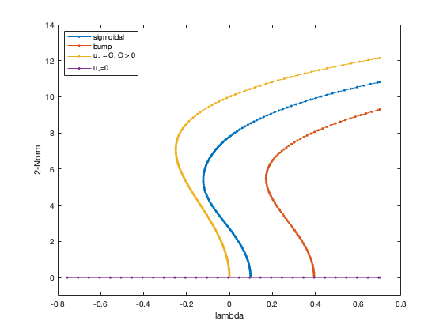 Question 12
See accompanying pdf
Question 13
% Set value of lambda and u around which we linearise lambda = 0; p0(2) = lambda; u = 0*x; % Get Jacobian and compute spectrum [~,J] = AllenCahn(u,p0,Dxx); [V,D] = eig(full(J)); % Note, this is a bad idea for large matrices! For larger % problems one should use eigs instead. % Sort the eigenvalues in descending order. [d,ix] = sort(diag(D),'descend'); figure; for j = 1:5 subplot(5,2,2*(j-1)+[1 2]); plot(x,real(V(:,ix(j))),'DisplayName','Re \psi(x)'); hold on; plot(x,imag(V(:,ix(j))),'DisplayName','Im \psi(x)'); hold off; title(['lambda = ' num2str(real(d(j))) ' + i ' num2str(imag(d(j))) ]); xlabel('x'); ylim([-0.3 0.3]); lgd = legend; lgd.Location = 'eastoutside'; end % I fuond it handy to write two functions, ComputeStability, and % ExploreBifurcationDiagram which compute and display useful information using the % branch/solution structure outputted by SecantContinuation. So I create here a % branch structure with just 3 solutions, and use them to provide evidence as % required in this question bd0 = [0 0 0;... 0 (pi/10)^2 0;... 0 (2*pi/10)^2 0]; sol0 = [0*x'; 0*x'; 0*x'];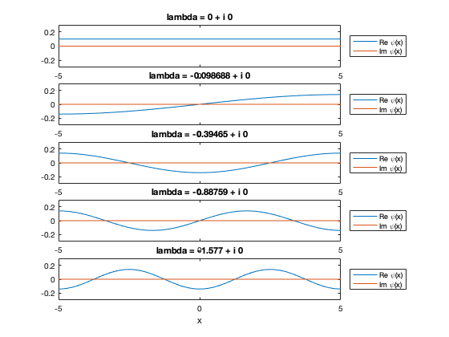
Question 14
We now use this framework for analysing the solutions at 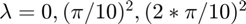. When 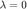, we see one critical eigenvalue, with a critical eigenmode that is constant in space
bd = bd0; sol = sol0; id = 1; [V,D] = ComputeStability(bd,sol,p,Dxx,id); ExploreBifDiag(bd,sol,id,D,V,x);
Linear stability of solution ID = 1, p(2) = 0.0000e+00, ||u|| = 0.0000e+00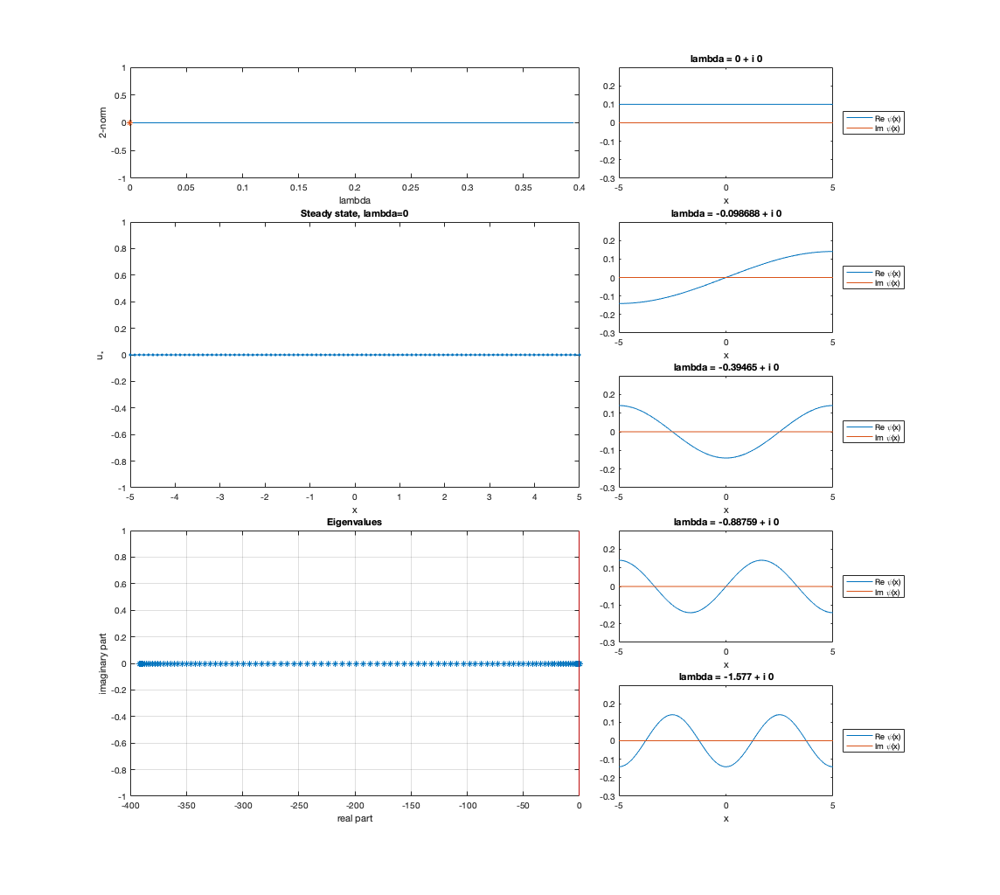
When 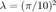, we see a second critical eigenvalue (the former critical eigenvalue has now become an unstable eigenvalue), with a critical eigenmode 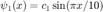 (here 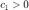). From this point a the branch of sigmoidal equilibria emanate. In fact, sigmoidal with small amplitude (close to the bifurcation) will look similar to the function 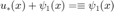. Here we also note that the critical eigenvalue is not exactly , and this should be expected because we are looking at eigenvalues of the differentiation matrix with 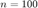, not the linear operator.
bd = bd0; sol = sol0; id = 2; [V,D] = ComputeStability(bd,sol,p,Dxx,id); ExploreBifDiag(bd,sol,id,D,V,x);
Linear stability of solution ID = 2, p(2) = 9.8696e-02, ||u|| = 0.0000e+00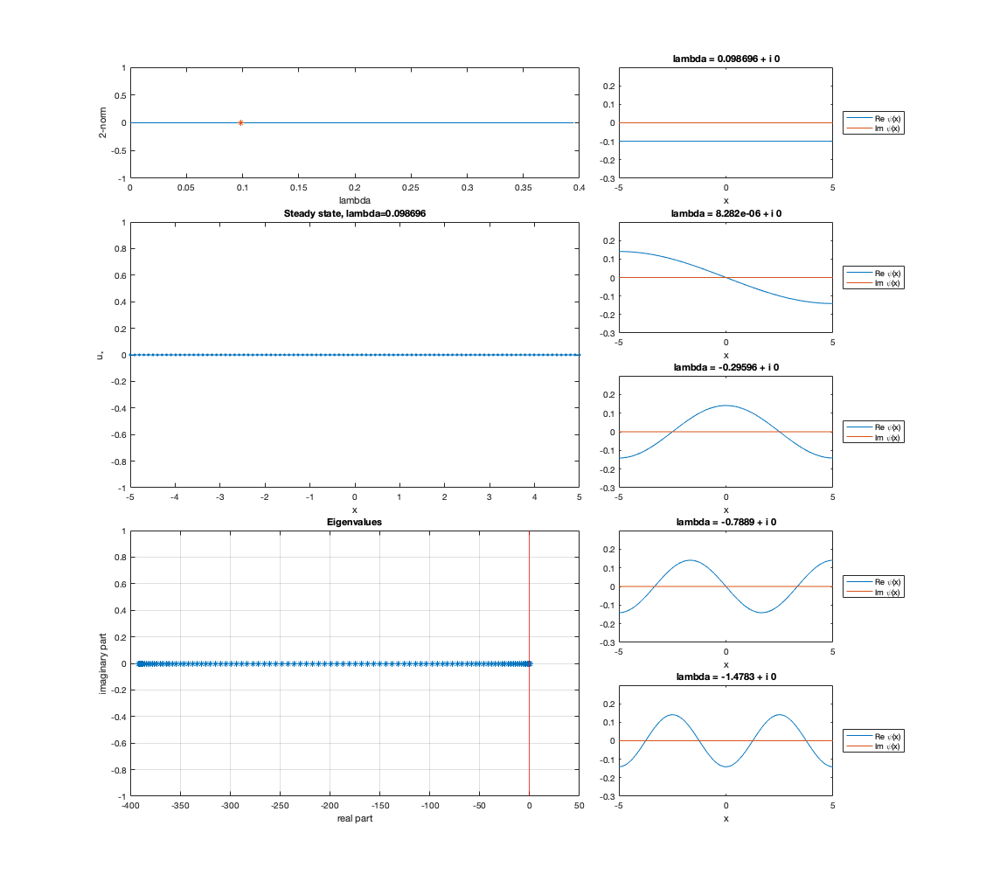
When 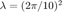, we see a third critical eigenvalue (the former critical eigenvalues have now become an unstable eigenvalues), with a critical eigenmode 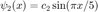 (here 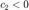). Here the emanating branch originates "bumps".
bd = bd0; sol = sol0; id = 3; [V,D] = ComputeStability(bd,sol,p,Dxx,id); ExploreBifDiag(bd,sol,id,D,V,x);
Linear stability of solution ID = 3, p(2) = 3.9478e-01, ||u|| = 0.0000e+00
Question 15
These are a few considerations on the first 2 open questions. We compute the first 5 eigenvalues for all the solutions along the branch of bumps. We then plot 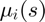 and 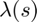, where 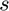 is a coordinate parametrising the solution branch. One can see along the branch there are always at least 2 unstable eigenvalues. At the saddle node bifurcation we see one real eigenvalue crossing at nonzero speed (see red star on both graphs). When looking at the eigenvalues plot, recall that the continuation is from 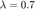, for decreasing . We also report the value of along the branch in the same plot as the eigenvalues, so as to have a reference point for the bifurcations. Overall, we conclude that this branch is unstable for all values of 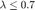.
% Computing eigenvalues along the branch of bumps bd = bd4; sol = sol4; nSol = size(bd,1); eVals = zeros(nSol,5); for i = 1:size(bd,1) id = i; [~,D] = ComputeStability(bd,sol,p0,Dxx,id); [d,ix] = sort(diag(D),'descend'); eVals(i,:) = d(1:5); end % Plotting branch figure; subplot(2,2,[1 2]); plot(bd(:,2),bd(:,3)); hold on; ii = 41; plot(bd(ii,2),bd(ii,3),'r*'); xlabel('\lambda'); ylabel('S_0'); title('Branch of bump solutions'); % Plotting eigenvalues subplot(2,2,[3 4]); plot(1+bd(:,1),real(eVals),'k-', 1+bd(:,1), bd(:,2),'-'); grid on; title('Most unstable eigenvalues along the branch'); xlabel('s'); ylabel('Re \mu_i'); lgd = legend({'\mu_1','\mu_2','\mu_3','\mu_4','\mu_5','\lambda'}); lgd.Location = 'southeast'; hold on; plot(ii, eVals(ii,3),'r*'); plot(ii, bd(ii,2),'r*'); hold off;
Linear stability of solution ID = 1, p(2) = 7.0000e-01, ||u|| = 9.2967e+00 Linear stability of solution ID = 2, p(2) = 6.9000e-01, ||u|| = 9.2638e+00 Linear stability of solution ID = 3, p(2) = 6.6304e-01, ||u|| = 9.1729e+00 Linear stability of solution ID = 4, p(2) = 6.3682e-01, ||u|| = 9.0817e+00 Linear stability of solution ID = 5, p(2) = 6.1135e-01, ||u|| = 8.9902e+00 Linear stability of solution ID = 6, p(2) = 5.8662e-01, ||u|| = 8.8983e+00 Linear stability of solution ID = 7, p(2) = 5.6262e-01, ||u|| = 8.8061e+00 Linear stability of solution ID = 8, p(2) = 5.3936e-01, ||u|| = 8.7136e+00 Linear stability of solution ID = 9, p(2) = 5.1682e-01, ||u|| = 8.6207e+00 Linear stability of solution ID = 10, p(2) = 4.9501e-01, ||u|| = 8.5276e+00 Linear stability of solution ID = 11, p(2) = 4.7393e-01, ||u|| = 8.4341e+00 Linear stability of solution ID = 12, p(2) = 4.5357e-01, ||u|| = 8.3402e+00 Linear stability of solution ID = 13, p(2) = 4.3393e-01, ||u|| = 8.2461e+00 Linear stability of solution ID = 14, p(2) = 4.1501e-01, ||u|| = 8.1516e+00 Linear stability of solution ID = 15, p(2) = 3.9680e-01, ||u|| = 8.0568e+00 Linear stability of solution ID = 16, p(2) = 3.7932e-01, ||u|| = 7.9617e+00 Linear stability of solution ID = 17, p(2) = 3.6255e-01, ||u|| = 7.8663e+00 Linear stability of solution ID = 18, p(2) = 3.4650e-01, ||u|| = 7.7706e+00 Linear stability of solution ID = 19, p(2) = 3.3116e-01, ||u|| = 7.6746e+00 Linear stability of solution ID = 20, p(2) = 3.1654e-01, ||u|| = 7.5783e+00 Linear stability of solution ID = 21, p(2) = 3.0263e-01, ||u|| = 7.4817e+00 Linear stability of solution ID = 22, p(2) = 2.8945e-01, ||u|| = 7.3848e+00 Linear stability of solution ID = 23, p(2) = 2.7697e-01, ||u|| = 7.2877e+00 Linear stability of solution ID = 24, p(2) = 2.6521e-01, ||u|| = 7.1903e+00 Linear stability of solution ID = 25, p(2) = 2.5417e-01, ||u|| = 7.0927e+00 Linear stability of solution ID = 26, p(2) = 2.4383e-01, ||u|| = 6.9948e+00 Linear stability of solution ID = 27, p(2) = 2.3421e-01, ||u|| = 6.8967e+00 Linear stability of solution ID = 28, p(2) = 2.2530e-01, ||u|| = 6.7984e+00 Linear stability of solution ID = 29, p(2) = 2.1709e-01, ||u|| = 6.6998e+00 Linear stability of solution ID = 30, p(2) = 2.0958e-01, ||u|| = 6.6011e+00 Linear stability of solution ID = 31, p(2) = 2.0276e-01, ||u|| = 6.5023e+00 Linear stability of solution ID = 32, p(2) = 1.9663e-01, ||u|| = 6.4032e+00 Linear stability of solution ID = 33, p(2) = 1.9118e-01, ||u|| = 6.3041e+00 Linear stability of solution ID = 34, p(2) = 1.8641e-01, ||u|| = 6.2048e+00 Linear stability of solution ID = 35, p(2) = 1.8229e-01, ||u|| = 6.1053e+00 Linear stability of solution ID = 36, p(2) = 1.7883e-01, ||u|| = 6.0058e+00 Linear stability of solution ID = 37, p(2) = 1.7600e-01, ||u|| = 5.9062e+00 Linear stability of solution ID = 38, p(2) = 1.7380e-01, ||u|| = 5.8065e+00 Linear stability of solution ID = 39, p(2) = 1.7220e-01, ||u|| = 5.7068e+00 Linear stability of solution ID = 40, p(2) = 1.7119e-01, ||u|| = 5.6069e+00 Linear stability of solution ID = 41, p(2) = 1.7076e-01, ||u|| = 5.5071e+00 Linear stability of solution ID = 42, p(2) = 1.7088e-01, ||u|| = 5.4072e+00 Linear stability of solution ID = 43, p(2) = 1.7154e-01, ||u|| = 5.3073e+00 Linear stability of solution ID = 44, p(2) = 1.7271e-01, ||u|| = 5.2074e+00 Linear stability of solution ID = 45, p(2) = 1.7437e-01, ||u|| = 5.1074e+00 Linear stability of solution ID = 46, p(2) = 1.7650e-01, ||u|| = 5.0075e+00 Linear stability of solution ID = 47, p(2) = 1.7907e-01, ||u|| = 4.9075e+00 Linear stability of solution ID = 48, p(2) = 1.8206e-01, ||u|| = 4.8076e+00 Linear stability of solution ID = 49, p(2) = 1.8544e-01, ||u|| = 4.7076e+00 Linear stability of solution ID = 50, p(2) = 1.8920e-01, ||u|| = 4.6077e+00 Linear stability of solution ID = 51, p(2) = 1.9330e-01, ||u|| = 4.5078e+00 Linear stability of solution ID = 52, p(2) = 1.9772e-01, ||u|| = 4.4079e+00 Linear stability of solution ID = 53, p(2) = 2.0243e-01, ||u|| = 4.3080e+00 Linear stability of solution ID = 54, p(2) = 2.0742e-01, ||u|| = 4.2081e+00 Linear stability of solution ID = 55, p(2) = 2.1264e-01, ||u|| = 4.1083e+00 Linear stability of solution ID = 56, p(2) = 2.1808e-01, ||u|| = 4.0084e+00 Linear stability of solution ID = 57, p(2) = 2.2372e-01, ||u|| = 3.9086e+00 Linear stability of solution ID = 58, p(2) = 2.2953e-01, ||u|| = 3.8088e+00 Linear stability of solution ID = 59, p(2) = 2.3547e-01, ||u|| = 3.7090e+00 Linear stability of solution ID = 60, p(2) = 2.4155e-01, ||u|| = 3.6091e+00 Linear stability of solution ID = 61, p(2) = 2.4771e-01, ||u|| = 3.5094e+00 Linear stability of solution ID = 62, p(2) = 2.5396e-01, ||u|| = 3.4096e+00 Linear stability of solution ID = 63, p(2) = 2.6026e-01, ||u|| = 3.3098e+00 Linear stability of solution ID = 64, p(2) = 2.6659e-01, ||u|| = 3.2100e+00 Linear stability of solution ID = 65, p(2) = 2.7293e-01, ||u|| = 3.1102e+00 Linear stability of solution ID = 66, p(2) = 2.7926e-01, ||u|| = 3.0104e+00 Linear stability of solution ID = 67, p(2) = 2.8557e-01, ||u|| = 2.9106e+00 Linear stability of solution ID = 68, p(2) = 2.9183e-01, ||u|| = 2.8108e+00 Linear stability of solution ID = 69, p(2) = 2.9802e-01, ||u|| = 2.7110e+00 Linear stability of solution ID = 70, p(2) = 3.0414e-01, ||u|| = 2.6112e+00 Linear stability of solution ID = 71, p(2) = 3.1016e-01, ||u|| = 2.5114e+00 Linear stability of solution ID = 72, p(2) = 3.1606e-01, ||u|| = 2.4116e+00 Linear stability of solution ID = 73, p(2) = 3.2184e-01, ||u|| = 2.3118e+00 Linear stability of solution ID = 74, p(2) = 3.2747e-01, ||u|| = 2.2120e+00 Linear stability of solution ID = 75, p(2) = 3.3294e-01, ||u|| = 2.1121e+00 Linear stability of solution ID = 76, p(2) = 3.3825e-01, ||u|| = 2.0123e+00 Linear stability of solution ID = 77, p(2) = 3.4338e-01, ||u|| = 1.9124e+00 Linear stability of solution ID = 78, p(2) = 3.4831e-01, ||u|| = 1.8125e+00 Linear stability of solution ID = 79, p(2) = 3.5304e-01, ||u|| = 1.7126e+00 Linear stability of solution ID = 80, p(2) = 3.5755e-01, ||u|| = 1.6127e+00 Linear stability of solution ID = 81, p(2) = 3.6184e-01, ||u|| = 1.5128e+00 Linear stability of solution ID = 82, p(2) = 3.6590e-01, ||u|| = 1.4129e+00 Linear stability of solution ID = 83, p(2) = 3.6972e-01, ||u|| = 1.3130e+00 Linear stability of solution ID = 84, p(2) = 3.7328e-01, ||u|| = 1.2131e+00 Linear stability of solution ID = 85, p(2) = 3.7659e-01, ||u|| = 1.1131e+00 Linear stability of solution ID = 86, p(2) = 3.7964e-01, ||u|| = 1.0132e+00 Linear stability of solution ID = 87, p(2) = 3.8242e-01, ||u|| = 9.1320e-01 Linear stability of solution ID = 88, p(2) = 3.8493e-01, ||u|| = 8.1323e-01 Linear stability of solution ID = 89, p(2) = 3.8715e-01, ||u|| = 7.1326e-01 Linear stability of solution ID = 90, p(2) = 3.8910e-01, ||u|| = 6.1327e-01 Linear stability of solution ID = 91, p(2) = 3.9075e-01, ||u|| = 5.1329e-01 Linear stability of solution ID = 92, p(2) = 3.9212e-01, ||u|| = 4.1330e-01 Linear stability of solution ID = 93, p(2) = 3.9320e-01, ||u|| = 3.1330e-01 Linear stability of solution ID = 94, p(2) = 3.9398e-01, ||u|| = 2.1330e-01 Linear stability of solution ID = 95, p(2) = 3.9446e-01, ||u|| = 1.1330e-01 Linear stability of solution ID = 96, p(2) = 3.9465e-01, ||u|| = 1.3305e-02 Linear stability of solution ID = 97, p(2) = 3.9454e-01, ||u|| = 8.6696e-02 Linear stability of solution ID = 98, p(2) = 3.9413e-01, ||u|| = 1.8670e-01 Linear stability of solution ID = 99, p(2) = 3.9343e-01, ||u|| = 2.8669e-01 Linear stability of solution ID = 100, p(2) = 3.9244e-01, ||u|| = 3.8669e-01 Linear stability of solution ID = 101, p(2) = 3.9115e-01, ||u|| = 4.8668e-01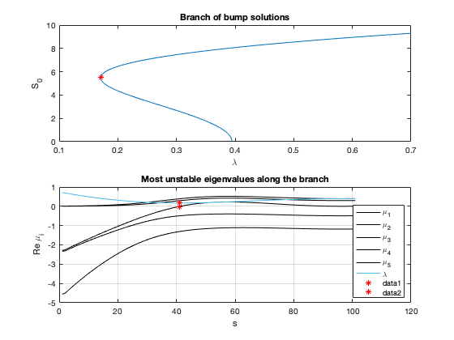
A similar statement can be made for the branch of sigmoidal steady states, which are unstable for all . We note that there are several bifurcations on this branch (and we should expect branches of solutions emanating from them, but we are not pursuing it here). However, this branch emanates from the trivial solution branch, at ; it is unstable at onset, and it does not re-stabilise at the saddle node bifurcation (another unstable eigenvalue is added at the saddle-node). In fact, the branch remains unstable for all .
bd = bd1; sol = sol1; nSol = size(bd,1); eVals = zeros(nSol,5); for i = 1:size(bd,1) id = i; [~,D] = ComputeStability(bd,sol,p0,Dxx,id); [d,ix] = sort(diag(D),'descend'); eVals(i,:) = d(1:5); end % Plotting branch figure; subplot(2,2,[1 2]); plot(bd(:,2),bd(:,3)); % hold on; ii = 41; % plot(bd(ii,2),bd(ii,3),'r*'); xlabel('\lambda'); ylabel('S_0'); title('Branch of sigmoidal solutions'); % Plotting eigenvalues subplot(2,2,[3 4]); plot(1+bd(:,1),real(eVals),'k-', 1+bd(:,1), bd(:,2),'-'); grid on; title('Most unstable eigenvalues along the branch'); xlabel('s'); ylabel('Re \mu_i'); lgd = legend({'\mu_1','\mu_2','\mu_3','\mu_4','\mu_5','\lambda'}); lgd.Location = 'southeast'; % hold on; % plot(ii, eVals(ii,3),'r*'); % plot(ii, bd(ii,2),'r*'); % hold off;
Linear stability of solution ID = 1, p(2) = 7.0000e-01, ||u|| = 1.0819e+01 Linear stability of solution ID = 2, p(2) = 6.9000e-01, ||u|| = 1.0793e+01 Linear stability of solution ID = 3, p(2) = 6.5746e-01, ||u|| = 1.0707e+01 Linear stability of solution ID = 4, p(2) = 6.2579e-01, ||u|| = 1.0621e+01 Linear stability of solution ID = 5, p(2) = 5.9498e-01, ||u|| = 1.0535e+01 Linear stability of solution ID = 6, p(2) = 5.6503e-01, ||u|| = 1.0449e+01 Linear stability of solution ID = 7, p(2) = 5.3592e-01, ||u|| = 1.0363e+01 Linear stability of solution ID = 8, p(2) = 5.0764e-01, ||u|| = 1.0277e+01 Linear stability of solution ID = 9, p(2) = 4.8020e-01, ||u|| = 1.0190e+01 Linear stability of solution ID = 10, p(2) = 4.5357e-01, ||u|| = 1.0104e+01 Linear stability of solution ID = 11, p(2) = 4.2774e-01, ||u|| = 1.0017e+01 Linear stability of solution ID = 12, p(2) = 4.0271e-01, ||u|| = 9.9304e+00 Linear stability of solution ID = 13, p(2) = 3.7846e-01, ||u|| = 9.8436e+00 Linear stability of solution ID = 14, p(2) = 3.5498e-01, ||u|| = 9.7568e+00 Linear stability of solution ID = 15, p(2) = 3.3226e-01, ||u|| = 9.6699e+00 Linear stability of solution ID = 16, p(2) = 3.1028e-01, ||u|| = 9.5830e+00 Linear stability of solution ID = 17, p(2) = 2.8904e-01, ||u|| = 9.4960e+00 Linear stability of solution ID = 18, p(2) = 2.6851e-01, ||u|| = 9.4090e+00 Linear stability of solution ID = 19, p(2) = 2.4868e-01, ||u|| = 9.3220e+00 Linear stability of solution ID = 20, p(2) = 2.2955e-01, ||u|| = 9.2349e+00 Linear stability of solution ID = 21, p(2) = 2.1109e-01, ||u|| = 9.1478e+00 Linear stability of solution ID = 22, p(2) = 1.9330e-01, ||u|| = 9.0607e+00 Linear stability of solution ID = 23, p(2) = 1.7615e-01, ||u|| = 8.9736e+00 Linear stability of solution ID = 24, p(2) = 1.5963e-01, ||u|| = 8.8864e+00 Linear stability of solution ID = 25, p(2) = 1.4373e-01, ||u|| = 8.7992e+00 Linear stability of solution ID = 26, p(2) = 1.2843e-01, ||u|| = 8.7120e+00 Linear stability of solution ID = 27, p(2) = 1.1372e-01, ||u|| = 8.6247e+00 Linear stability of solution ID = 28, p(2) = 9.9587e-02, ||u|| = 8.5374e+00 Linear stability of solution ID = 29, p(2) = 8.6010e-02, ||u|| = 8.4501e+00 Linear stability of solution ID = 30, p(2) = 7.2978e-02, ||u|| = 8.3627e+00 Linear stability of solution ID = 31, p(2) = 6.0475e-02, ||u|| = 8.2752e+00 Linear stability of solution ID = 32, p(2) = 4.8487e-02, ||u|| = 8.1876e+00 Linear stability of solution ID = 33, p(2) = 3.7001e-02, ||u|| = 8.1000e+00 Linear stability of solution ID = 34, p(2) = 2.6002e-02, ||u|| = 8.0123e+00 Linear stability of solution ID = 35, p(2) = 1.5478e-02, ||u|| = 7.9244e+00 Linear stability of solution ID = 36, p(2) = 5.4141e-03, ||u|| = 7.8365e+00 Linear stability of solution ID = 37, p(2) = -4.2010e-03, ||u|| = 7.7484e+00 Linear stability of solution ID = 38, p(2) = -1.3380e-02, ||u|| = 7.6601e+00 Linear stability of solution ID = 39, p(2) = -2.2135e-02, ||u|| = 7.5716e+00 Linear stability of solution ID = 40, p(2) = -3.0477e-02, ||u|| = 7.4830e+00 Linear stability of solution ID = 41, p(2) = -3.8417e-02, ||u|| = 7.3941e+00 Linear stability of solution ID = 42, p(2) = -4.5965e-02, ||u|| = 7.3050e+00 Linear stability of solution ID = 43, p(2) = -5.3130e-02, ||u|| = 7.2156e+00 Linear stability of solution ID = 44, p(2) = -5.9921e-02, ||u|| = 7.1259e+00 Linear stability of solution ID = 45, p(2) = -6.6345e-02, ||u|| = 7.0360e+00 Linear stability of solution ID = 46, p(2) = -7.2409e-02, ||u|| = 6.9456e+00 Linear stability of solution ID = 47, p(2) = -7.8119e-02, ||u|| = 6.8550e+00 Linear stability of solution ID = 48, p(2) = -8.3480e-02, ||u|| = 6.7639e+00 Linear stability of solution ID = 49, p(2) = -8.8496e-02, ||u|| = 6.6725e+00 Linear stability of solution ID = 50, p(2) = -9.3168e-02, ||u|| = 6.5806e+00 Linear stability of solution ID = 51, p(2) = -9.7498e-02, ||u|| = 6.4883e+00 Linear stability of solution ID = 52, p(2) = -1.0149e-01, ||u|| = 6.3955e+00 Linear stability of solution ID = 53, p(2) = -1.0513e-01, ||u|| = 6.3022e+00 Linear stability of solution ID = 54, p(2) = -1.0843e-01, ||u|| = 6.2085e+00 Linear stability of solution ID = 55, p(2) = -1.1138e-01, ||u|| = 6.1143e+00 Linear stability of solution ID = 56, p(2) = -1.1398e-01, ||u|| = 6.0195e+00 Linear stability of solution ID = 57, p(2) = -1.1622e-01, ||u|| = 5.9243e+00 Linear stability of solution ID = 58, p(2) = -1.1809e-01, ||u|| = 5.8285e+00 Linear stability of solution ID = 59, p(2) = -1.1959e-01, ||u|| = 5.7323e+00 Linear stability of solution ID = 60, p(2) = -1.2071e-01, ||u|| = 5.6355e+00 Linear stability of solution ID = 61, p(2) = -1.2143e-01, ||u|| = 5.5384e+00 Linear stability of solution ID = 62, p(2) = -1.2176e-01, ||u|| = 5.4407e+00 Linear stability of solution ID = 63, p(2) = -1.2169e-01, ||u|| = 5.3427e+00 Linear stability of solution ID = 64, p(2) = -1.2120e-01, ||u|| = 5.2443e+00 Linear stability of solution ID = 65, p(2) = -1.2030e-01, ||u|| = 5.1456e+00 Linear stability of solution ID = 66, p(2) = -1.1897e-01, ||u|| = 5.0466e+00 Linear stability of solution ID = 67, p(2) = -1.1723e-01, ||u|| = 4.9473e+00 Linear stability of solution ID = 68, p(2) = -1.1508e-01, ||u|| = 4.8478e+00 Linear stability of solution ID = 69, p(2) = -1.1250e-01, ||u|| = 4.7482e+00 Linear stability of solution ID = 70, p(2) = -1.0953e-01, ||u|| = 4.6484e+00 Linear stability of solution ID = 71, p(2) = -1.0616e-01, ||u|| = 4.5486e+00 Linear stability of solution ID = 72, p(2) = -1.0240e-01, ||u|| = 4.4487e+00 Linear stability of solution ID = 73, p(2) = -9.8286e-02, ||u|| = 4.3488e+00 Linear stability of solution ID = 74, p(2) = -9.3823e-02, ||u|| = 4.2489e+00 Linear stability of solution ID = 75, p(2) = -8.9038e-02, ||u|| = 4.1491e+00 Linear stability of solution ID = 76, p(2) = -8.3953e-02, ||u|| = 4.0492e+00 Linear stability of solution ID = 77, p(2) = -7.8594e-02, ||u|| = 3.9494e+00 Linear stability of solution ID = 78, p(2) = -7.2989e-02, ||u|| = 3.8497e+00 Linear stability of solution ID = 79, p(2) = -6.7165e-02, ||u|| = 3.7500e+00 Linear stability of solution ID = 80, p(2) = -6.1151e-02, ||u|| = 3.6504e+00 Linear stability of solution ID = 81, p(2) = -5.4977e-02, ||u|| = 3.5508e+00 Linear stability of solution ID = 82, p(2) = -4.8671e-02, ||u|| = 3.4513e+00 Linear stability of solution ID = 83, p(2) = -4.2262e-02, ||u|| = 3.3517e+00 Linear stability of solution ID = 84, p(2) = -3.5779e-02, ||u|| = 3.2522e+00 Linear stability of solution ID = 85, p(2) = -2.9248e-02, ||u|| = 3.1527e+00 Linear stability of solution ID = 86, p(2) = -2.2697e-02, ||u|| = 3.0532e+00 Linear stability of solution ID = 87, p(2) = -1.6151e-02, ||u|| = 2.9537e+00 Linear stability of solution ID = 88, p(2) = -9.6349e-03, ||u|| = 2.8542e+00 Linear stability of solution ID = 89, p(2) = -3.1709e-03, ||u|| = 2.7547e+00 Linear stability of solution ID = 90, p(2) = 3.2186e-03, ||u|| = 2.6551e+00 Linear stability of solution ID = 91, p(2) = 9.5130e-03, ||u|| = 2.5556e+00 Linear stability of solution ID = 92, p(2) = 1.5693e-02, ||u|| = 2.4560e+00 Linear stability of solution ID = 93, p(2) = 2.1741e-02, ||u|| = 2.3563e+00 Linear stability of solution ID = 94, p(2) = 2.7640e-02, ||u|| = 2.2567e+00 Linear stability of solution ID = 95, p(2) = 3.3374e-02, ||u|| = 2.1570e+00 Linear stability of solution ID = 96, p(2) = 3.8930e-02, ||u|| = 2.0572e+00 Linear stability of solution ID = 97, p(2) = 4.4293e-02, ||u|| = 1.9575e+00 Linear stability of solution ID = 98, p(2) = 4.9453e-02, ||u|| = 1.8577e+00 Linear stability of solution ID = 99, p(2) = 5.4397e-02, ||u|| = 1.7579e+00 Linear stability of solution ID = 100, p(2) = 5.9117e-02, ||u|| = 1.6581e+00 Linear stability of solution ID = 101, p(2) = 6.3602e-02, ||u|| = 1.5582e+00 Linear stability of solution ID = 102, p(2) = 6.7844e-02, ||u|| = 1.4583e+00 Linear stability of solution ID = 103, p(2) = 7.1835e-02, ||u|| = 1.3584e+00 Linear stability of solution ID = 104, p(2) = 7.5570e-02, ||u|| = 1.2585e+00 Linear stability of solution ID = 105, p(2) = 7.9041e-02, ||u|| = 1.1586e+00 Linear stability of solution ID = 106, p(2) = 8.2243e-02, ||u|| = 1.0587e+00 Linear stability of solution ID = 107, p(2) = 8.5171e-02, ||u|| = 9.5872e-01 Linear stability of solution ID = 108, p(2) = 8.7821e-02, ||u|| = 8.5876e-01 Linear stability of solution ID = 109, p(2) = 9.0189e-02, ||u|| = 7.5879e-01 Linear stability of solution ID = 110, p(2) = 9.2271e-02, ||u|| = 6.5882e-01 Linear stability of solution ID = 111, p(2) = 9.4065e-02, ||u|| = 5.5883e-01 Linear stability of solution ID = 112, p(2) = 9.5568e-02, ||u|| = 4.5884e-01 Linear stability of solution ID = 113, p(2) = 9.6778e-02, ||u|| = 3.5885e-01 Linear stability of solution ID = 114, p(2) = 9.7693e-02, ||u|| = 2.5885e-01 Linear stability of solution ID = 115, p(2) = 9.8313e-02, ||u|| = 1.5886e-01 Linear stability of solution ID = 116, p(2) = 9.8636e-02, ||u|| = 5.8855e-02 Linear stability of solution ID = 117, p(2) = 9.8663e-02, ||u|| = 4.1145e-02 Linear stability of solution ID = 118, p(2) = 9.8392e-02, ||u|| = 1.4115e-01 Linear stability of solution ID = 119, p(2) = 9.7825e-02, ||u|| = 2.4114e-01 Linear stability of solution ID = 120, p(2) = 9.6962e-02, ||u|| = 3.4114e-01 Linear stability of solution ID = 121, p(2) = 9.5804e-02, ||u|| = 4.4113e-01 Linear stability of solution ID = 122, p(2) = 9.4352e-02, ||u|| = 5.4112e-01 Linear stability of solution ID = 123, p(2) = 9.2610e-02, ||u|| = 6.4111e-01 Linear stability of solution ID = 124, p(2) = 9.0579e-02, ||u|| = 7.4109e-01 Linear stability of solution ID = 125, p(2) = 8.8261e-02, ||u|| = 8.4106e-01 Linear stability of solution ID = 126, p(2) = 8.5661e-02, ||u|| = 9.4102e-01 Linear stability of solution ID = 127, p(2) = 8.2782e-02, ||u|| = 1.0410e+00 Linear stability of solution ID = 128, p(2) = 7.9628e-02, ||u|| = 1.1409e+00 Linear stability of solution ID = 129, p(2) = 7.6204e-02, ||u|| = 1.2408e+00 Linear stability of solution ID = 130, p(2) = 7.2516e-02, ||u|| = 1.3408e+00 Linear stability of solution ID = 131, p(2) = 6.8569e-02, ||u|| = 1.4406e+00 Linear stability of solution ID = 132, p(2) = 6.4371e-02, ||u|| = 1.5405e+00 Linear stability of solution ID = 133, p(2) = 5.9928e-02, ||u|| = 1.6404e+00 Linear stability of solution ID = 134, p(2) = 5.5250e-02, ||u|| = 1.7402e+00 Linear stability of solution ID = 135, p(2) = 5.0345e-02, ||u|| = 1.8400e+00 Linear stability of solution ID = 136, p(2) = 4.5222e-02, ||u|| = 1.9398e+00 Linear stability of solution ID = 137, p(2) = 3.9894e-02, ||u|| = 2.0396e+00 Linear stability of solution ID = 138, p(2) = 3.4371e-02, ||u|| = 2.1393e+00 Linear stability of solution ID = 139, p(2) = 2.8668e-02, ||u|| = 2.2390e+00 Linear stability of solution ID = 140, p(2) = 2.2797e-02, ||u|| = 2.3387e+00 Linear stability of solution ID = 141, p(2) = 1.6774e-02, ||u|| = 2.4383e+00 Linear stability of solution ID = 142, p(2) = 1.0616e-02, ||u|| = 2.5379e+00 Linear stability of solution ID = 143, p(2) = 4.3409e-03, ||u|| = 2.6375e+00 Linear stability of solution ID = 144, p(2) = -2.0332e-03, ||u|| = 2.7371e+00 Linear stability of solution ID = 145, p(2) = -8.4856e-03, ||u|| = 2.8366e+00 Linear stability of solution ID = 146, p(2) = -1.4994e-02, ||u|| = 2.9361e+00 Linear stability of solution ID = 147, p(2) = -2.1537e-02, ||u|| = 3.0356e+00 Linear stability of solution ID = 148, p(2) = -2.8089e-02, ||u|| = 3.1351e+00 Linear stability of solution ID = 149, p(2) = -3.4625e-02, ||u|| = 3.2346e+00 Linear stability of solution ID = 150, p(2) = -4.1119e-02, ||u|| = 3.3341e+00 Linear stability of solution ID = 151, p(2) = -4.7543e-02, ||u|| = 3.4336e+00 Linear stability of solution ID = 152, p(2) = -5.3869e-02, ||u|| = 3.5332e+00 Linear stability of solution ID = 153, p(2) = -6.0069e-02, ||u|| = 3.6328e+00 Linear stability of solution ID = 154, p(2) = -6.6113e-02, ||u|| = 3.7324e+00 Linear stability of solution ID = 155, p(2) = -7.1972e-02, ||u|| = 3.8321e+00 Linear stability of solution ID = 156, p(2) = -7.7618e-02, ||u|| = 3.9318e+00 Linear stability of solution ID = 157, p(2) = -8.3022e-02, ||u|| = 4.0315e+00 Linear stability of solution ID = 158, p(2) = -8.8158e-02, ||u|| = 4.1314e+00 Linear stability of solution ID = 159, p(2) = -9.2998e-02, ||u|| = 4.2312e+00 Linear stability of solution ID = 160, p(2) = -9.7519e-02, ||u|| = 4.3311e+00 Linear stability of solution ID = 161, p(2) = -1.0170e-01, ||u|| = 4.4310e+00 Linear stability of solution ID = 162, p(2) = -1.0552e-01, ||u|| = 4.5309e+00 Linear stability of solution ID = 163, p(2) = -1.0896e-01, ||u|| = 4.6307e+00 Linear stability of solution ID = 164, p(2) = -1.1201e-01, ||u|| = 4.7305e+00 Linear stability of solution ID = 165, p(2) = -1.1465e-01, ||u|| = 4.8302e+00 Linear stability of solution ID = 166, p(2) = -1.1688e-01, ||u|| = 4.9297e+00 Linear stability of solution ID = 167, p(2) = -1.1870e-01, ||u|| = 5.0290e+00 Linear stability of solution ID = 168, p(2) = -1.2009e-01, ||u|| = 5.1280e+00 Linear stability of solution ID = 169, p(2) = -1.2107e-01, ||u|| = 5.2268e+00 Linear stability of solution ID = 170, p(2) = -1.2163e-01, ||u|| = 5.3253e+00 Linear stability of solution ID = 171, p(2) = -1.2178e-01, ||u|| = 5.4234e+00 Linear stability of solution ID = 172, p(2) = -1.2152e-01, ||u|| = 5.5211e+00 Linear stability of solution ID = 173, p(2) = -1.2086e-01, ||u|| = 5.6183e+00 Linear stability of solution ID = 174, p(2) = -1.1982e-01, ||u|| = 5.7151e+00 Linear stability of solution ID = 175, p(2) = -1.1838e-01, ||u|| = 5.8115e+00 Linear stability of solution ID = 176, p(2) = -1.1658e-01, ||u|| = 5.9073e+00 Linear stability of solution ID = 177, p(2) = -1.1440e-01, ||u|| = 6.0027e+00 Linear stability of solution ID = 178, p(2) = -1.1187e-01, ||u|| = 6.0975e+00 Linear stability of solution ID = 179, p(2) = -1.0898e-01, ||u|| = 6.1918e+00 Linear stability of solution ID = 180, p(2) = -1.0574e-01, ||u|| = 6.2857e+00 Linear stability of solution ID = 181, p(2) = -1.0216e-01, ||u|| = 6.3790e+00 Linear stability of solution ID = 182, p(2) = -9.8230e-02, ||u|| = 6.4719e+00 Linear stability of solution ID = 183, p(2) = -9.3960e-02, ||u|| = 6.5643e+00 Linear stability of solution ID = 184, p(2) = -8.9349e-02, ||u|| = 6.6562e+00 Linear stability of solution ID = 185, p(2) = -8.4394e-02, ||u|| = 6.7477e+00 Linear stability of solution ID = 186, p(2) = -7.9095e-02, ||u|| = 6.8389e+00 Linear stability of solution ID = 187, p(2) = -7.3447e-02, ||u|| = 6.9296e+00 Linear stability of solution ID = 188, p(2) = -6.7446e-02, ||u|| = 7.0200e+00 Linear stability of solution ID = 189, p(2) = -6.1086e-02, ||u|| = 7.1100e+00 Linear stability of solution ID = 190, p(2) = -5.4361e-02, ||u|| = 7.1997e+00 Linear stability of solution ID = 191, p(2) = -4.7263e-02, ||u|| = 7.2892e+00 Linear stability of solution ID = 192, p(2) = -3.9783e-02, ||u|| = 7.3783e+00 Linear stability of solution ID = 193, p(2) = -3.1913e-02, ||u|| = 7.4672e+00 Linear stability of solution ID = 194, p(2) = -2.3643e-02, ||u|| = 7.5559e+00 Linear stability of solution ID = 195, p(2) = -1.4962e-02, ||u|| = 7.6444e+00 Linear stability of solution ID = 196, p(2) = -5.8590e-03, ||u|| = 7.7327e+00 Linear stability of solution ID = 197, p(2) = 3.6781e-03, ||u|| = 7.8209e+00 Linear stability of solution ID = 198, p(2) = 1.3661e-02, ||u|| = 7.9089e+00 Linear stability of solution ID = 199, p(2) = 2.4103e-02, ||u|| = 7.9967e+00 Linear stability of solution ID = 200, p(2) = 3.5017e-02, ||u|| = 8.0845e+00 Linear stability of solution ID = 201, p(2) = 4.6416e-02, ||u|| = 8.1721e+00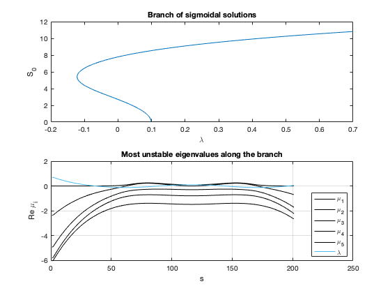
Unlike the other branches, the branch of homogeneous solution is initially unstable, but it has stable segments. There are several bifurcation in addition to the saddle-node bifurcation.
bd = bd2; sol = sol2; nSol = size(bd,1); eVals = zeros(nSol,5); for i = 1:size(bd,1) id = i; [~,D] = ComputeStability(bd,sol,p0,Dxx,id); [d,ix] = sort(diag(D),'descend'); eVals(i,:) = d(1:5); end % Plotting branch figure; subplot(2,2,[1 2]); plot(bd(:,2),bd(:,3)); % hold on; ii = 41; % plot(bd(ii,2),bd(ii,3),'r*'); xlabel('\lambda'); ylabel('S_0'); title('Branch of homogeneous solutions'); % Plotting eigenvalues subplot(2,2,[3 4]); plot(1+bd(:,1),real(eVals),'k-', 1+bd(:,1), bd(:,2),'-'); grid on; title('Most unstable eigenvalues along the branch'); xlabel('s'); ylabel('Re \mu_i'); lgd = legend({'\mu_1','\mu_2','\mu_3','\mu_4','\mu_5','\lambda'}); lgd.Location = 'southeast';
Linear stability of solution ID = 1, p(2) = 7.0000e-01, ||u|| = 1.2144e+01 Linear stability of solution ID = 2, p(2) = 6.9000e-01, ||u|| = 1.2122e+01 Linear stability of solution ID = 3, p(2) = 6.4798e-01, ||u|| = 1.2032e+01 Linear stability of solution ID = 4, p(2) = 6.0701e-01, ||u|| = 1.1940e+01 Linear stability of solution ID = 5, p(2) = 5.6710e-01, ||u|| = 1.1849e+01 Linear stability of solution ID = 6, p(2) = 5.2824e-01, ||u|| = 1.1757e+01 Linear stability of solution ID = 7, p(2) = 4.9045e-01, ||u|| = 1.1664e+01 Linear stability of solution ID = 8, p(2) = 4.5372e-01, ||u|| = 1.1571e+01 Linear stability of solution ID = 9, p(2) = 4.1806e-01, ||u|| = 1.1478e+01 Linear stability of solution ID = 10, p(2) = 3.8345e-01, ||u|| = 1.1384e+01 Linear stability of solution ID = 11, p(2) = 3.4991e-01, ||u|| = 1.1290e+01 Linear stability of solution ID = 12, p(2) = 3.1742e-01, ||u|| = 1.1195e+01 Linear stability of solution ID = 13, p(2) = 2.8598e-01, ||u|| = 1.1100e+01 Linear stability of solution ID = 14, p(2) = 2.5558e-01, ||u|| = 1.1005e+01 Linear stability of solution ID = 15, p(2) = 2.2623e-01, ||u|| = 1.0909e+01 Linear stability of solution ID = 16, p(2) = 1.9791e-01, ||u|| = 1.0813e+01 Linear stability of solution ID = 17, p(2) = 1.7061e-01, ||u|| = 1.0717e+01 Linear stability of solution ID = 18, p(2) = 1.4433e-01, ||u|| = 1.0621e+01 Linear stability of solution ID = 19, p(2) = 1.1905e-01, ||u|| = 1.0524e+01 Linear stability of solution ID = 20, p(2) = 9.4773e-02, ||u|| = 1.0427e+01 Linear stability of solution ID = 21, p(2) = 7.1475e-02, ||u|| = 1.0330e+01 Linear stability of solution ID = 22, p(2) = 4.9148e-02, ||u|| = 1.0232e+01 Linear stability of solution ID = 23, p(2) = 2.7779e-02, ||u|| = 1.0134e+01 Linear stability of solution ID = 24, p(2) = 7.3541e-03, ||u|| = 1.0036e+01 Linear stability of solution ID = 25, p(2) = -1.2141e-02, ||u|| = 9.9384e+00 Linear stability of solution ID = 26, p(2) = -3.0720e-02, ||u|| = 9.8401e+00 Linear stability of solution ID = 27, p(2) = -4.8400e-02, ||u|| = 9.7417e+00 Linear stability of solution ID = 28, p(2) = -6.5195e-02, ||u|| = 9.6431e+00 Linear stability of solution ID = 29, p(2) = -8.1123e-02, ||u|| = 9.5443e+00 Linear stability of solution ID = 30, p(2) = -9.6201e-02, ||u|| = 9.4455e+00 Linear stability of solution ID = 31, p(2) = -1.1044e-01, ||u|| = 9.3465e+00 Linear stability of solution ID = 32, p(2) = -1.2387e-01, ||u|| = 9.2474e+00 Linear stability of solution ID = 33, p(2) = -1.3650e-01, ||u|| = 9.1482e+00 Linear stability of solution ID = 34, p(2) = -1.4835e-01, ||u|| = 9.0489e+00 Linear stability of solution ID = 35, p(2) = -1.5944e-01, ||u|| = 8.9495e+00 Linear stability of solution ID = 36, p(2) = -1.6978e-01, ||u|| = 8.8501e+00 Linear stability of solution ID = 37, p(2) = -1.7940e-01, ||u|| = 8.7505e+00 Linear stability of solution ID = 38, p(2) = -1.8831e-01, ||u|| = 8.6509e+00 Linear stability of solution ID = 39, p(2) = -1.9653e-01, ||u|| = 8.5512e+00 Linear stability of solution ID = 40, p(2) = -2.0408e-01, ||u|| = 8.4515e+00 Linear stability of solution ID = 41, p(2) = -2.1099e-01, ||u|| = 8.3518e+00 Linear stability of solution ID = 42, p(2) = -2.1726e-01, ||u|| = 8.2520e+00 Linear stability of solution ID = 43, p(2) = -2.2292e-01, ||u|| = 8.1521e+00 Linear stability of solution ID = 44, p(2) = -2.2798e-01, ||u|| = 8.0522e+00 Linear stability of solution ID = 45, p(2) = -2.3247e-01, ||u|| = 7.9523e+00 Linear stability of solution ID = 46, p(2) = -2.3640e-01, ||u|| = 7.8524e+00 Linear stability of solution ID = 47, p(2) = -2.3980e-01, ||u|| = 7.7525e+00 Linear stability of solution ID = 48, p(2) = -2.4267e-01, ||u|| = 7.6525e+00 Linear stability of solution ID = 49, p(2) = -2.4504e-01, ||u|| = 7.5525e+00 Linear stability of solution ID = 50, p(2) = -2.4693e-01, ||u|| = 7.4526e+00 Linear stability of solution ID = 51, p(2) = -2.4835e-01, ||u|| = 7.3526e+00 Linear stability of solution ID = 52, p(2) = -2.4932e-01, ||u|| = 7.2526e+00 Linear stability of solution ID = 53, p(2) = -2.4987e-01, ||u|| = 7.1526e+00 Linear stability of solution ID = 54, p(2) = -2.4999e-01, ||u|| = 7.0526e+00 Linear stability of solution ID = 55, p(2) = -2.4972e-01, ||u|| = 6.9526e+00 Linear stability of solution ID = 56, p(2) = -2.4907e-01, ||u|| = 6.8526e+00 Linear stability of solution ID = 57, p(2) = -2.4806e-01, ||u|| = 6.7526e+00 Linear stability of solution ID = 58, p(2) = -2.4670e-01, ||u|| = 6.6526e+00 Linear stability of solution ID = 59, p(2) = -2.4501e-01, ||u|| = 6.5526e+00 Linear stability of solution ID = 60, p(2) = -2.4300e-01, ||u|| = 6.4526e+00 Linear stability of solution ID = 61, p(2) = -2.4070e-01, ||u|| = 6.3526e+00 Linear stability of solution ID = 62, p(2) = -2.3811e-01, ||u|| = 6.2527e+00 Linear stability of solution ID = 63, p(2) = -2.3525e-01, ||u|| = 6.1527e+00 Linear stability of solution ID = 64, p(2) = -2.3214e-01, ||u|| = 6.0528e+00 Linear stability of solution ID = 65, p(2) = -2.2879e-01, ||u|| = 5.9528e+00 Linear stability of solution ID = 66, p(2) = -2.2521e-01, ||u|| = 5.8529e+00 Linear stability of solution ID = 67, p(2) = -2.2143e-01, ||u|| = 5.7530e+00 Linear stability of solution ID = 68, p(2) = -2.1744e-01, ||u|| = 5.6530e+00 Linear stability of solution ID = 69, p(2) = -2.1328e-01, ||u|| = 5.5531e+00 Linear stability of solution ID = 70, p(2) = -2.0894e-01, ||u|| = 5.4532e+00 Linear stability of solution ID = 71, p(2) = -2.0445e-01, ||u|| = 5.3533e+00 Linear stability of solution ID = 72, p(2) = -1.9982e-01, ||u|| = 5.2534e+00 Linear stability of solution ID = 73, p(2) = -1.9505e-01, ||u|| = 5.1535e+00 Linear stability of solution ID = 74, p(2) = -1.9017e-01, ||u|| = 5.0537e+00 Linear stability of solution ID = 75, p(2) = -1.8518e-01, ||u|| = 4.9538e+00 Linear stability of solution ID = 76, p(2) = -1.8010e-01, ||u|| = 4.8539e+00 Linear stability of solution ID = 77, p(2) = -1.7493e-01, ||u|| = 4.7540e+00 Linear stability of solution ID = 78, p(2) = -1.6969e-01, ||u|| = 4.6542e+00 Linear stability of solution ID = 79, p(2) = -1.6440e-01, ||u|| = 4.5543e+00 Linear stability of solution ID = 80, p(2) = -1.5905e-01, ||u|| = 4.4545e+00 Linear stability of solution ID = 81, p(2) = -1.5367e-01, ||u|| = 4.3546e+00 Linear stability of solution ID = 82, p(2) = -1.4826e-01, ||u|| = 4.2548e+00 Linear stability of solution ID = 83, p(2) = -1.4283e-01, ||u|| = 4.1549e+00 Linear stability of solution ID = 84, p(2) = -1.3740e-01, ||u|| = 4.0551e+00 Linear stability of solution ID = 85, p(2) = -1.3196e-01, ||u|| = 3.9552e+00 Linear stability of solution ID = 86, p(2) = -1.2654e-01, ||u|| = 3.8553e+00 Linear stability of solution ID = 87, p(2) = -1.2115e-01, ||u|| = 3.7555e+00 Linear stability of solution ID = 88, p(2) = -1.1578e-01, ||u|| = 3.6556e+00 Linear stability of solution ID = 89, p(2) = -1.1045e-01, ||u|| = 3.5558e+00 Linear stability of solution ID = 90, p(2) = -1.0517e-01, ||u|| = 3.4559e+00 Linear stability of solution ID = 91, p(2) = -9.9945e-02, ||u|| = 3.3561e+00 Linear stability of solution ID = 92, p(2) = -9.4786e-02, ||u|| = 3.2562e+00 Linear stability of solution ID = 93, p(2) = -8.9699e-02, ||u|| = 3.1563e+00 Linear stability of solution ID = 94, p(2) = -8.4691e-02, ||u|| = 3.0564e+00 Linear stability of solution ID = 95, p(2) = -7.9772e-02, ||u|| = 2.9566e+00 Linear stability of solution ID = 96, p(2) = -7.4947e-02, ||u|| = 2.8567e+00 Linear stability of solution ID = 97, p(2) = -7.0223e-02, ||u|| = 2.7568e+00 Linear stability of solution ID = 98, p(2) = -6.5608e-02, ||u|| = 2.6569e+00 Linear stability of solution ID = 99, p(2) = -6.1108e-02, ||u|| = 2.5570e+00 Linear stability of solution ID = 100, p(2) = -5.6728e-02, ||u|| = 2.4571e+00 Linear stability of solution ID = 101, p(2) = -5.2476e-02, ||u|| = 2.3572e+00 Linear stability of solution ID = 102, p(2) = -4.8357e-02, ||u|| = 2.2573e+00 Linear stability of solution ID = 103, p(2) = -4.4375e-02, ||u|| = 2.1574e+00 Linear stability of solution ID = 104, p(2) = -4.0538e-02, ||u|| = 2.0574e+00 Linear stability of solution ID = 105, p(2) = -3.6849e-02, ||u|| = 1.9575e+00 Linear stability of solution ID = 106, p(2) = -3.3314e-02, ||u|| = 1.8576e+00 Linear stability of solution ID = 107, p(2) = -2.9938e-02, ||u|| = 1.7576e+00 Linear stability of solution ID = 108, p(2) = -2.6723e-02, ||u|| = 1.6577e+00 Linear stability of solution ID = 109, p(2) = -2.3676e-02, ||u|| = 1.5577e+00 Linear stability of solution ID = 110, p(2) = -2.0799e-02, ||u|| = 1.4577e+00 Linear stability of solution ID = 111, p(2) = -1.8096e-02, ||u|| = 1.3578e+00 Linear stability of solution ID = 112, p(2) = -1.5571e-02, ||u|| = 1.2578e+00 Linear stability of solution ID = 113, p(2) = -1.3226e-02, ||u|| = 1.1578e+00 Linear stability of solution ID = 114, p(2) = -1.1066e-02, ||u|| = 1.0579e+00 Linear stability of solution ID = 115, p(2) = -9.0913e-03, ||u|| = 9.5789e-01 Linear stability of solution ID = 116, p(2) = -7.3058e-03, ||u|| = 8.5790e-01 Linear stability of solution ID = 117, p(2) = -5.7114e-03, ||u|| = 7.5792e-01 Linear stability of solution ID = 118, p(2) = -4.3099e-03, ||u|| = 6.5793e-01 Linear stability of solution ID = 119, p(2) = -3.1032e-03, ||u|| = 5.5793e-01 Linear stability of solution ID = 120, p(2) = -2.0927e-03, ||u|| = 4.5794e-01 Linear stability of solution ID = 121, p(2) = -1.2796e-03, ||u|| = 3.5794e-01 Linear stability of solution ID = 122, p(2) = -6.6490e-04, ||u|| = 2.5794e-01 Linear stability of solution ID = 123, p(2) = -2.4940e-04, ||u|| = 1.5794e-01 Linear stability of solution ID = 124, p(2) = -3.3573e-05, ||u|| = 5.7943e-02 Linear stability of solution ID = 125, p(2) = -1.7688e-05, ||u|| = 4.2057e-02 Linear stability of solution ID = 126, p(2) = -2.0176e-04, ||u|| = 1.4206e-01 Linear stability of solution ID = 127, p(2) = -5.8557e-04, ||u|| = 2.4206e-01 Linear stability of solution ID = 128, p(2) = -1.1686e-03, ||u|| = 3.4205e-01 Linear stability of solution ID = 129, p(2) = -1.9503e-03, ||u|| = 4.4205e-01 Linear stability of solution ID = 130, p(2) = -2.9295e-03, ||u|| = 5.4205e-01 Linear stability of solution ID = 131, p(2) = -4.1052e-03, ||u|| = 6.4204e-01 Linear stability of solution ID = 132, p(2) = -5.4758e-03, ||u|| = 7.4203e-01 Linear stability of solution ID = 133, p(2) = -7.0397e-03, ||u|| = 8.4202e-01 Linear stability of solution ID = 134, p(2) = -8.7950e-03, ||u|| = 9.4200e-01 Linear stability of solution ID = 135, p(2) = -1.0739e-02, ||u|| = 1.0420e+00 Linear stability of solution ID = 136, p(2) = -1.2871e-02, ||u|| = 1.1420e+00 Linear stability of solution ID = 137, p(2) = -1.5186e-02, ||u|| = 1.2419e+00 Linear stability of solution ID = 138, p(2) = -1.7683e-02, ||u|| = 1.3419e+00 Linear stability of solution ID = 139, p(2) = -2.0358e-02, ||u|| = 1.4419e+00 Linear stability of solution ID = 140, p(2) = -2.3207e-02, ||u|| = 1.5418e+00 Linear stability of solution ID = 141, p(2) = -2.6228e-02, ||u|| = 1.6418e+00 Linear stability of solution ID = 142, p(2) = -2.9416e-02, ||u|| = 1.7417e+00 Linear stability of solution ID = 143, p(2) = -3.2767e-02, ||u|| = 1.8417e+00 Linear stability of solution ID = 144, p(2) = -3.6278e-02, ||u|| = 1.9416e+00 Linear stability of solution ID = 145, p(2) = -3.9942e-02, ||u|| = 2.0415e+00 Linear stability of solution ID = 146, p(2) = -4.3756e-02, ||u|| = 2.1415e+00 Linear stability of solution ID = 147, p(2) = -4.7715e-02, ||u|| = 2.2414e+00 Linear stability of solution ID = 148, p(2) = -5.1813e-02, ||u|| = 2.3413e+00 Linear stability of solution ID = 149, p(2) = -5.6044e-02, ||u|| = 2.4412e+00 Linear stability of solution ID = 150, p(2) = -6.0404e-02, ||u|| = 2.5411e+00 Linear stability of solution ID = 151, p(2) = -6.4885e-02, ||u|| = 2.6410e+00 Linear stability of solution ID = 152, p(2) = -6.9483e-02, ||u|| = 2.7409e+00 Linear stability of solution ID = 153, p(2) = -7.4189e-02, ||u|| = 2.8408e+00 Linear stability of solution ID = 154, p(2) = -7.8999e-02, ||u|| = 2.9407e+00 Linear stability of solution ID = 155, p(2) = -8.3904e-02, ||u|| = 3.0406e+00 Linear stability of solution ID = 156, p(2) = -8.8898e-02, ||u|| = 3.1405e+00 Linear stability of solution ID = 157, p(2) = -9.3973e-02, ||u|| = 3.2403e+00 Linear stability of solution ID = 158, p(2) = -9.9121e-02, ||u|| = 3.3402e+00 Linear stability of solution ID = 159, p(2) = -1.0434e-01, ||u|| = 3.4401e+00 Linear stability of solution ID = 160, p(2) = -1.0961e-01, ||u|| = 3.5399e+00 Linear stability of solution ID = 161, p(2) = -1.1493e-01, ||u|| = 3.6398e+00 Linear stability of solution ID = 162, p(2) = -1.2029e-01, ||u|| = 3.7396e+00 Linear stability of solution ID = 163, p(2) = -1.2568e-01, ||u|| = 3.8395e+00 Linear stability of solution ID = 164, p(2) = -1.3110e-01, ||u|| = 3.9393e+00 Linear stability of solution ID = 165, p(2) = -1.3653e-01, ||u|| = 4.0392e+00 Linear stability of solution ID = 166, p(2) = -1.4197e-01, ||u|| = 4.1390e+00 Linear stability of solution ID = 167, p(2) = -1.4740e-01, ||u|| = 4.2389e+00 Linear stability of solution ID = 168, p(2) = -1.5281e-01, ||u|| = 4.3387e+00 Linear stability of solution ID = 169, p(2) = -1.5820e-01, ||u|| = 4.4386e+00 Linear stability of solution ID = 170, p(2) = -1.6355e-01, ||u|| = 4.5385e+00 Linear stability of solution ID = 171, p(2) = -1.6885e-01, ||u|| = 4.6383e+00 Linear stability of solution ID = 172, p(2) = -1.7410e-01, ||u|| = 4.7382e+00 Linear stability of solution ID = 173, p(2) = -1.7928e-01, ||u|| = 4.8380e+00 Linear stability of solution ID = 174, p(2) = -1.8438e-01, ||u|| = 4.9379e+00 Linear stability of solution ID = 175, p(2) = -1.8938e-01, ||u|| = 5.0378e+00 Linear stability of solution ID = 176, p(2) = -1.9428e-01, ||u|| = 5.1377e+00 Linear stability of solution ID = 177, p(2) = -1.9907e-01, ||u|| = 5.2376e+00 Linear stability of solution ID = 178, p(2) = -2.0372e-01, ||u|| = 5.3374e+00 Linear stability of solution ID = 179, p(2) = -2.0824e-01, ||u|| = 5.4373e+00 Linear stability of solution ID = 180, p(2) = -2.1260e-01, ||u|| = 5.5373e+00 Linear stability of solution ID = 181, p(2) = -2.1679e-01, ||u|| = 5.6372e+00 Linear stability of solution ID = 182, p(2) = -2.2081e-01, ||u|| = 5.7371e+00 Linear stability of solution ID = 183, p(2) = -2.2463e-01, ||u|| = 5.8370e+00 Linear stability of solution ID = 184, p(2) = -2.2824e-01, ||u|| = 5.9369e+00 Linear stability of solution ID = 185, p(2) = -2.3162e-01, ||u|| = 6.0369e+00 Linear stability of solution ID = 186, p(2) = -2.3477e-01, ||u|| = 6.1368e+00 Linear stability of solution ID = 187, p(2) = -2.3767e-01, ||u|| = 6.2368e+00 Linear stability of solution ID = 188, p(2) = -2.4031e-01, ||u|| = 6.3368e+00 Linear stability of solution ID = 189, p(2) = -2.4266e-01, ||u|| = 6.4367e+00 Linear stability of solution ID = 190, p(2) = -2.4471e-01, ||u|| = 6.5367e+00 Linear stability of solution ID = 191, p(2) = -2.4645e-01, ||u|| = 6.6367e+00 Linear stability of solution ID = 192, p(2) = -2.4787e-01, ||u|| = 6.7367e+00 Linear stability of solution ID = 193, p(2) = -2.4894e-01, ||u|| = 6.8367e+00 Linear stability of solution ID = 194, p(2) = -2.4965e-01, ||u|| = 6.9367e+00 Linear stability of solution ID = 195, p(2) = -2.4998e-01, ||u|| = 7.0367e+00 Linear stability of solution ID = 196, p(2) = -2.4991e-01, ||u|| = 7.1367e+00 Linear stability of solution ID = 197, p(2) = -2.4944e-01, ||u|| = 7.2367e+00 Linear stability of solution ID = 198, p(2) = -2.4854e-01, ||u|| = 7.3367e+00 Linear stability of solution ID = 199, p(2) = -2.4719e-01, ||u|| = 7.4367e+00 Linear stability of solution ID = 200, p(2) = -2.4537e-01, ||u|| = 7.5367e+00 Linear stability of solution ID = 201, p(2) = -2.4308e-01, ||u|| = 7.6366e+00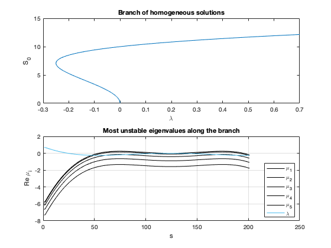
One consideration is that, when we computed the brute-force bifurcation diagram in Figure 1.2 of the tutorial, using a time stepper, the sigmoidal and bump steady states both "seemed" stable at . On the other hand, the stability analysis above tells us taht both are unstable. We can see from the results below that the solution spends a long time close to the unstable bump equilibrium, before being ejected from it, and being attracted by the homogeneous stable state. First let us make a simulation for 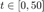: the bump solution would appear as a stable. We know this is in contraddiction with the numerical bifurcation analysis.
p = [1; 0.7; 0; 1; 1]; u0 = 0.4*cos(2*pi/10*x); rhs = @(t,u) AllenCahn(u,p,Dxx); tSpan = [0 50]; [t,UHist] = ode15s(rhs,tSpan,u0); [X,T] = meshgrid(x,t); figure; surf(X,T,UHist); shading interp; xlabel('x'); ylabel('t'); zlabel('u');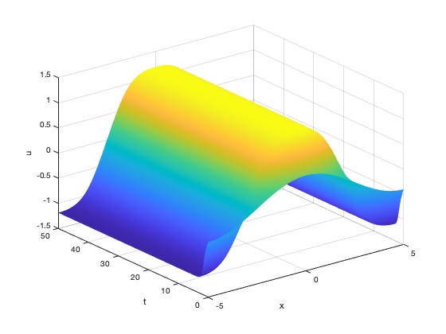
Let's repeat the simulation for : after about 1500 time units the bump reveals itself as unstable, and the solution reaches the homogeneous stable steady state. This is in accordance with the numerical bifurcation analysis
tSpan = [0 6000]; [t,UHist] = ode15s(rhs,tSpan,u0); [X,T] = meshgrid(x,t); figure; surf(X,T,UHist); shading interp; xlabel('x'); ylabel('t'); zlabel('u');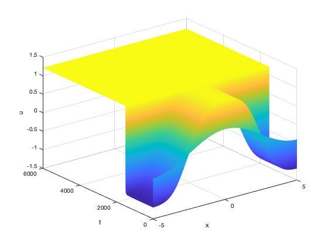